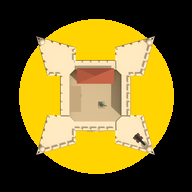

<!doctype html>
<html lang="pt">
<head>
<meta charset="utf-8">
<meta name="viewport" content="width=device-width, initial-scale=1, viewport-fit=cover">
<meta name="theme-color" content="#0B1016">
<link rel="manifest" href="manifest.webmanifest">
<link rel="icon" href="icon.svg" type="image/svg+xml">
<link rel="apple-touch-icon" href="icon-192.png">
<title>Caçadores da História</title>
<script type="importmap">{"imports":{"three":"./vendor/three.module.min.js"}}</script>
<script type="module" src="ra3d.js"></script>
<style>
/* =====================================================================
   Sistema de design — Caçadores da História
   R7: contraste ≥ 7:1 (branco e dourado sobre fundo escuro; texto escuro sobre dourado)
   R13: tudo em rem, para respeitar o tamanho de letra do sistema
   Alvos de toque ≥ 48 px (3 rem). Um só destaque de cor: o dourado.
   ===================================================================== */
:root{
  --bg:#0B1016; --bg2:#121A23; --sup:#18222D; --sup2:#223040; --linha:#2E3F52;
  --fg:#FFFFFF; --fg2:#C9D4DF; --ouro:#FFC93C; --ouro2:#FFDE7A; --tinta:#0B1016;
  --ok:#5BE38A; --erro:#FF8A80; --azul:#8CCBFF;
  --r:1rem; --alvo:3rem; --sombra:0 .5rem 1.5rem rgba(0,0,0,.45);
  --amarelo:var(--ouro);
}
*{box-sizing:border-box}
html{font-size:100%;-webkit-tap-highlight-color:transparent}
html,body{margin:0;min-height:100%;background:var(--bg);color:var(--fg)}
body{font-family:system-ui,-apple-system,"Segoe UI",Roboto,"Noto Sans",sans-serif;line-height:1.45;overscroll-behavior:none;
  background:radial-gradient(120% 60% at 50% 0%,#1A2634 0%,var(--bg) 60%) fixed}
#app{min-height:100vh}
.ecra{max-width:34rem;margin:0 auto;padding:1rem 1rem 5rem;animation:entra .25s ease-out}
@keyframes entra{from{opacity:0;transform:translateY(.4rem)}}
h1{font-size:2rem;line-height:1.1;margin:.4rem 0 .6rem;letter-spacing:-.01em}
h2{font-size:1.45rem;line-height:1.2;margin:.4rem 0 .6rem}
h3{font-size:1.1rem;margin:1.2rem 0 .4rem;color:var(--fg2);font-weight:700}
p{margin:.5rem 0}
.sub{color:var(--ouro);font-weight:800;letter-spacing:.04em;text-transform:uppercase;font-size:.8rem}
.nota{font-size:.95rem;color:var(--fg2)}
.i{width:1.3em;height:1.3em;flex:none;stroke:currentColor;fill:none;stroke-width:2.2;stroke-linecap:round;stroke-linejoin:round}
.i.cheio{fill:currentColor;stroke:none}

/* botões */
button,.btn{font:inherit;font-weight:800;min-height:var(--alvo);min-width:var(--alvo);padding:.75rem 1.1rem;border-radius:.9rem;
  border:2px solid var(--linha);background:var(--sup);color:var(--fg);cursor:pointer;touch-action:manipulation;
  display:inline-flex;align-items:center;justify-content:center;gap:.55rem;transition:transform .08s,background .15s,border-color .15s}
button:active:not(:disabled){transform:scale(.97)}
@media (hover:hover){button:hover:not(:disabled){border-color:#4A6178}}
button:focus-visible,input:focus-visible,textarea:focus-visible,[tabindex]:focus-visible{outline:3px solid var(--ouro);outline-offset:3px}
.prim{background:var(--ouro);color:var(--tinta);border-color:var(--ouro);box-shadow:0 .3rem 0 #B8860B}
@media (hover:hover){.prim:hover:not(:disabled){background:var(--ouro2);border-color:var(--ouro2)}}
.larga{width:100%;margin:.55rem 0}
.grande{min-height:3.8rem;font-size:1.2rem;border-radius:1.1rem}
.btn-volta,.icbtn{background:transparent;border-color:transparent;padding:.5rem .6rem;color:var(--fg)}
.icbtn{width:var(--alvo);height:var(--alvo);padding:0;border-radius:50%;background:rgba(255,255,255,.08)}
button:disabled{opacity:.4;cursor:not-allowed}
.linha{display:flex;gap:.6rem;flex-wrap:wrap;align-items:center}
.linha>*{flex:1 1 auto}

/* superfícies */
.caixa{background:var(--sup);border:1px solid var(--linha);border-radius:var(--r);padding:1rem;margin:.9rem 0}
.caixa.amarela{border:2px solid var(--ouro)}
.appbar{display:flex;align-items:center;gap:.4rem;min-height:3.2rem;margin:-.2rem -.4rem .4rem}
.appbar h2{margin:0;font-size:1.2rem;flex:1}
label{display:block;font-weight:700;margin:1rem 0 .35rem;color:var(--fg2)}
input[type=text],textarea{font:inherit;width:100%;min-height:var(--alvo);padding:.7rem .9rem;border-radius:.8rem;border:2px solid var(--linha);background:var(--bg2);color:var(--fg)}
input[type=text]:focus,textarea:focus{border-color:var(--ouro)}
.escolha{display:grid;grid-template-columns:repeat(auto-fit,minmax(7.5rem,1fr));gap:.5rem}
.escolha button{background:var(--bg2)}
.escolha button[aria-pressed=true]{background:var(--ouro);color:var(--tinta);border-color:var(--ouro)}
.papel{display:inline-flex;align-items:center;gap:.35rem;background:var(--ouro);color:var(--tinta);font-weight:900;border-radius:999px;padding:.25rem .8rem;font-size:.9rem}
.barra-topo{display:flex;justify-content:space-between;align-items:center;gap:.5rem;flex-wrap:wrap;margin-bottom:.6rem}
.pill{display:inline-flex;align-items:center;gap:.4rem;border:1px solid var(--linha);background:var(--sup);border-radius:999px;padding:.3rem .8rem;font-weight:800;white-space:nowrap}
.barra-prog{height:.6rem;border-radius:999px;background:var(--bg2);overflow:hidden;margin:.6rem 0}
.barra-prog i{display:block;height:100%;background:var(--ouro);border-radius:999px}
.estrelas{display:inline-flex;gap:.15rem;color:var(--ouro)}.estrelas .vazia{color:#4A5A6B}
.avatar{display:inline-flex;align-items:center;justify-content:center;width:2.4rem;height:2.4rem;border-radius:50%;font-weight:900;color:var(--tinta);flex:none}
.avatar.g{width:4.5rem;height:4.5rem;font-size:2rem}

/* ecrã título */
.titulo{position:relative;min-height:100vh;display:flex;flex-direction:column;max-width:34rem;margin:0 auto;padding:1rem 1rem calc(1.5rem + env(safe-area-inset-bottom))}
.titulo .topo{display:flex;justify-content:space-between;align-items:center;gap:.5rem;position:relative;z-index:2}
.chip-conta{display:inline-flex;align-items:center;gap:.55rem;background:rgba(255,255,255,.08);border:1px solid var(--linha);border-radius:999px;padding:.25rem .9rem .25rem .3rem;font-weight:800;min-height:var(--alvo)}
.heroi{position:relative;flex:1;min-height:16rem;margin:.5rem -1rem 0;display:flex;align-items:center;justify-content:center}
.heroi img{width:78%;max-width:22rem;filter:drop-shadow(0 1.2rem 1.5rem rgba(0,0,0,.6))}
.heroi canvas{border-radius:0}
.marca{text-align:center;position:relative;z-index:2}
.marca h1{font-size:2.4rem;margin:.2rem 0}
.marca p{color:var(--fg2);margin:0 0 1.2rem}

/* folha (painel inferior) de definições e pausa */
.veu{position:fixed;inset:0;background:rgba(0,0,0,.6);z-index:80;display:flex;align-items:flex-end;justify-content:center;animation:fade .2s}
@keyframes fade{from{opacity:0}}
.folha{background:var(--bg2);width:100%;max-width:34rem;border-radius:1.4rem 1.4rem 0 0;padding:.6rem 1rem calc(1rem + env(safe-area-inset-bottom));max-height:88vh;overflow:auto;animation:sobe .25s ease-out;border-top:1px solid var(--linha)}
@keyframes sobe{from{transform:translateY(100%)}}
.folha .pega{width:2.6rem;height:.3rem;border-radius:999px;background:var(--linha);margin:.2rem auto .6rem}
.item{display:flex;align-items:center;gap:.8rem;width:100%;justify-content:flex-start;text-align:left;background:transparent;border:0;border-radius:.8rem;padding:.8rem .5rem;font-weight:700}
@media (hover:hover){.item:hover{background:var(--sup)}}
.item .txt{flex:1}.item .dir{color:var(--fg2);font-weight:600}
.sep{height:1px;background:var(--linha);margin:.4rem 0}
.interruptor{position:relative;width:3.2rem;height:1.9rem;border-radius:999px;background:#3A4A5C;flex:none;transition:background .15s}
.interruptor::after{content:"";position:absolute;top:.2rem;left:.2rem;width:1.5rem;height:1.5rem;border-radius:50%;background:#fff;transition:left .15s}
[aria-checked=true] .interruptor{background:var(--ouro)}[aria-checked=true] .interruptor::after{left:1.5rem}
.passos-letra{display:flex;align-items:center;gap:.4rem}

/* níveis */
.nivel{display:grid;grid-template-columns:5.5rem 1fr;gap:.9rem;align-items:center;background:var(--sup);border:1px solid var(--linha);border-radius:var(--r);padding:.8rem;margin:.8rem 0}
.nivel.ativo{border:2px solid var(--ouro)}
.nivel .mini{aspect-ratio:1;border-radius:.8rem;background:linear-gradient(#2a6fb0,#1f5fa8);display:flex;align-items:center;justify-content:center;overflow:hidden}
.nivel .mini img{width:92%}
.nivel.bloq{opacity:.55}.nivel.bloq .mini{background:var(--bg2);color:var(--fg2)}
.nivel h2{font-size:1.15rem;margin:.1rem 0}
.nivel .acoes{grid-column:1/-1}

/* ---------- Procurar (câmara) ---------- */
.cam{position:fixed;inset:0;overflow:hidden;background:#000;touch-action:none;user-select:none}
.cam video{position:absolute;inset:0;width:100%;height:100%;object-fit:cover}
.pano{position:absolute;inset:0;background:linear-gradient(#5aa9e6 0 38%,transparent 38%),repeating-linear-gradient(90deg,#d8bb84 0 60px,#c9a96f 60px 62px),#c9a96f}
.pano::before{content:"";position:absolute;left:0;right:0;top:30%;height:9%;background:repeating-linear-gradient(90deg,#d8bb84 0 34px,transparent 34px 56px)}
.pano::after{content:"";position:absolute;left:0;right:0;bottom:0;height:30%;background:#8a6a43}
.peca-ra{position:absolute;top:42%;width:7rem;height:7rem;margin:-3.5rem 0 0 -3.5rem;display:flex;align-items:center;justify-content:center;border-radius:1.2rem;transition:transform .15s;animation:flutua 2.4s ease-in-out infinite;pointer-events:none}
.peca-ra img{width:100%;height:100%;object-fit:contain;filter:drop-shadow(0 0 3px #000) drop-shadow(0 0 2px #000)}
#mundo.tem3d .peca-ra img{opacity:0}
#mundo.tem3d .peca-ra{animation:none;top:50%}
#mundo.tem3d .peca-ra.encontrada{background:transparent}
.peca-ra.encontrada{pointer-events:auto;transform:scale(1.6);background:rgba(0,0,0,.5);outline:4px solid var(--ouro);outline-offset:4px;cursor:pointer;animation:none}
@keyframes flutua{50%{translate:0 -10px}}
.hud{position:absolute;top:max(.8rem,env(safe-area-inset-top));left:.8rem;right:8rem;display:flex;flex-direction:column;gap:.4rem;align-items:flex-start}
.hud .pill,.info-topo .pill{background:rgba(11,16,22,.85);border-color:rgba(255,255,255,.25)}
.info-topo{position:absolute;top:max(.8rem,env(safe-area-inset-top));left:.8rem;right:8rem;display:flex;flex-direction:column;gap:.4rem;align-items:flex-start}
.radar{position:absolute;top:max(.8rem,env(safe-area-inset-top));right:.8rem;width:6.5rem;height:6.5rem;border-radius:50%;background:rgba(11,16,22,.82);border:2px solid rgba(255,255,255,.7)}
.radar::before{content:"";position:absolute;left:50%;top:0;bottom:50%;border-left:2px dashed rgba(255,255,255,.5)}
.radar .eu{position:absolute;left:50%;top:50%;width:.9rem;height:.9rem;margin:-.45rem;border-radius:50%;background:#fff}
.radar .alvo{position:absolute;left:50%;top:50%;width:1.3rem;height:1.3rem;margin:-.65rem;border-radius:50%;background:var(--ouro);border:3px solid var(--tinta)}
.dica{position:absolute;left:50%;bottom:calc(6.6rem + env(safe-area-inset-bottom));transform:translateX(-50%);background:rgba(11,16,22,.9);border:2px solid rgba(255,255,255,.6);color:#fff;font-weight:900;font-size:1.25rem;padding:.55rem 1.1rem;border-radius:999px;white-space:nowrap;text-align:center}
.dica.quente{border-color:var(--ouro);color:var(--ouro)}
.calor{width:10rem;max-width:100%;height:.6rem;border-radius:999px;background:rgba(11,16,22,.85);border:1px solid rgba(255,255,255,.3);overflow:hidden}
.calor i{display:block;height:100%;width:0;background:linear-gradient(90deg,var(--azul),var(--ouro),#ff6a3d)}
.rodar{position:absolute;top:50%;transform:translateY(-50%);background:rgba(11,16,22,.82);border-color:rgba(255,255,255,.3);border-radius:50%;width:3.4rem;height:3.4rem;padding:0}
.rodar.esq{left:.5rem}.rodar.dir{right:.5rem}
.rodar.andar{right:.5rem;top:calc(50% + 4.4rem);border-color:var(--ouro);color:var(--ouro)}
.fundo-cam{position:absolute;left:0;right:0;bottom:0;padding:.5rem .5rem calc(.5rem + env(safe-area-inset-bottom));display:flex;gap:.35rem;background:linear-gradient(transparent,rgba(11,16,22,.95) 35%)}
.fundo-cam button{flex:1;flex-direction:column;gap:.15rem;padding:.4rem .2rem;font-size:.8rem;background:rgba(24,34,45,.92);border-color:rgba(255,255,255,.15);border-radius:.9rem;min-height:3.6rem}
.fundo-cam button .i{width:1.5rem;height:1.5rem}
.fundo-cam button.prim{background:var(--ouro);color:var(--tinta)}
.aviso-cam{position:absolute;left:.8rem;right:.8rem;top:8.8rem;background:rgba(11,16,22,.9);border:1px solid rgba(255,255,255,.3);border-radius:.8rem;padding:.6rem .8rem;font-size:.95rem}

/* ---------- Curiosidade / pergunta ---------- */
.peca-grande{position:relative;width:100%;height:13rem;margin:.3rem auto;display:flex;justify-content:center;border-radius:var(--r);background:radial-gradient(circle at 50% 60%,#25415E,transparent 70%)}
.peca-grande img{width:13rem;height:100%;object-fit:contain}
.vista3d{position:relative;background:linear-gradient(#2a6fb0,#9fd0f5)}
.dica3d{position:absolute;left:.6rem;bottom:.6rem;background:rgba(11,16,22,.85);color:#fff;font-weight:800;font-size:.85rem;padding:.25rem .7rem;border-radius:999px;pointer-events:none}
.legenda{font-size:1.15rem;background:var(--sup);border-left:5px solid var(--ouro);padding:.9rem 1rem;border-radius:.6rem;line-height:1.5}
.opcoes{display:grid;gap:.7rem;margin-top:1rem}
.opcoes button{font-size:1.2rem;justify-content:flex-start;text-align:left;min-height:4rem;background:var(--sup)}
.opcoes button.certa{background:var(--ok);color:var(--tinta);border-color:var(--ok)}
.opcoes button.errada{background:var(--erro);color:var(--tinta);border-color:var(--erro)}
.retro{font-size:1.3rem;font-weight:900;margin-top:1rem}

/* ---------- Montar ---------- */
.tabuleiro{position:relative;width:100%;margin:0 auto;aspect-ratio:1;border-radius:var(--r);overflow:hidden;background:#1f5fa8;box-shadow:var(--sombra)}
.tabuleiro>.fundo{position:absolute;inset:0;width:100%;height:100%}
.slot{position:absolute}
.slot img{width:100%;height:100%;display:block}
.slot.vazio img{opacity:.35;filter:grayscale(1) brightness(.6)}
.slot.vazio{outline:2px dashed var(--ouro);outline-offset:1px;border-radius:.3rem}
.slot.encaixa{animation:pop .35s}
@keyframes pop{50%{transform:scale(1.12)}}
.mochila{display:grid;grid-template-columns:repeat(auto-fill,minmax(5.2rem,1fr));gap:.6rem;margin-top:.4rem}
.mpeca{aspect-ratio:1;border:2px solid var(--linha);border-radius:.9rem;display:flex;align-items:center;justify-content:center;padding:.4rem;background:var(--sup);touch-action:none;cursor:grab;position:relative}
.mpeca img{width:100%;height:100%;object-fit:contain;pointer-events:none}
.mpeca.bloq{border-style:dashed;color:var(--fg2);font-size:1.4rem;cursor:default;background:transparent}
.mpeca small{position:absolute;bottom:.2rem;right:.25rem;display:flex;background:var(--bg);border-radius:.5rem;padding:.1rem;color:var(--fg2)}
.mpeca small .i{width:1.1rem;height:1.1rem}
.mpeca.pronta{border-color:var(--ok);box-shadow:0 0 0 2px var(--ok)}
.mpeca.pronta small{color:var(--ok)}
.fantasma{position:fixed;pointer-events:none;z-index:50;opacity:.92;filter:drop-shadow(0 6px 8px rgba(0,0,0,.6))}
.fantasma img{width:100%;height:100%;display:block}
.legenda-ic{display:flex;flex-wrap:wrap;gap:.4rem;margin:.2rem 0 .8rem}
.legenda-ic span{border:1px solid var(--linha);background:var(--sup);border-radius:999px;padding:.2rem .7rem;font-size:.9rem;color:var(--fg2)}
.slot.alvo{outline:3px solid var(--ouro);animation:piscar .8s infinite}
@keyframes piscar{50%{outline-color:transparent;background:rgba(255,201,60,.4)}}
.slot.iman{outline:3px solid var(--ok)!important;background:rgba(91,227,138,.4);animation:none}
.slot.quase{outline:3px solid var(--erro)!important;animation:none}

/* ---------- Sem RA ---------- */
.local{display:grid;grid-template-columns:5.5rem 1fr;gap:.9rem;align-items:center;background:var(--sup);border:1px solid var(--linha);border-radius:var(--r);padding:.7rem;margin:.7rem 0}
.local .foto{aspect-ratio:1;background:linear-gradient(#2a6fb0,#1f5fa8);border-radius:.7rem;display:flex;align-items:flex-end;justify-content:center;overflow:hidden}
.local .foto img,#pg img{width:100%;height:100%;object-fit:contain}

/* ---------- Professora / dados ---------- */
.codigo{font-size:2.4rem;font-weight:900;letter-spacing:.15em;text-align:center;color:var(--ouro);border:2px dashed var(--ouro);border-radius:var(--r);padding:.6rem}
table{width:100%;border-collapse:collapse;font-size:.95rem;background:var(--sup);border-radius:.8rem;overflow:hidden}
th,td{border-bottom:1px solid var(--linha);padding:.55rem .6rem;text-align:left}
th{background:var(--sup2);color:var(--fg2);font-weight:700}
.qr{background:#fff;padding:.8rem;border-radius:var(--r);width:min(17rem,78vw);margin:1rem auto}
.qr svg{width:100%;height:auto;display:block}
.escala{display:grid;grid-template-columns:repeat(5,1fr);gap:.35rem}
.escala button{padding:.3rem;font-size:1.1rem;background:var(--bg2)}
.escala button[aria-pressed=true]{background:var(--ouro);color:var(--tinta);border-color:var(--ouro)}
.ok{color:var(--ok);font-weight:900}.nok{color:var(--erro);font-weight:900}
.destaque{font-size:1.3rem;font-weight:900;color:var(--ouro)}
.estado{display:inline-block;min-width:4.2rem;text-align:center;border-radius:999px;padding:.1rem .5rem;font-size:.8rem;font-weight:900;margin-right:.5rem}
.estado.s{background:var(--ok);color:var(--tinta)}.estado.n{background:var(--erro);color:var(--tinta)}.estado.a{background:var(--sup2);color:var(--fg)}

/* ---------- Passar o telemóvel ---------- */
.passa{min-height:100vh;display:flex;flex-direction:column;justify-content:center;gap:.2rem;text-align:center;max-width:30rem;margin:0 auto;padding:1.5rem}
.ic-grande{width:6rem;height:6rem;border-radius:50%;background:var(--sup);border:2px solid var(--ouro);color:var(--ouro);display:flex;align-items:center;justify-content:center;margin:0 auto 1rem}
.ic-grande .i{width:3rem;height:3rem}

/* ---------- Significantes de jogo: pegadas, setas, mão ---------- */
.xr-ov{position:fixed;inset:0;z-index:40;pointer-events:none;color:#fff}
.xr-ov button{pointer-events:auto}
.pegadas{position:absolute;left:50%;bottom:calc(10.4rem + env(safe-area-inset-bottom));transform:translateX(-50%);display:flex;gap:.8rem;pointer-events:none}
.pegadas span{display:flex;opacity:.15;animation:passo 1.2s infinite}
.pegadas .i{width:2.4rem;height:2.4rem}
.pegadas span:nth-child(2){animation-delay:.3s}.pegadas span:nth-child(3){animation-delay:.6s}
@keyframes passo{30%{opacity:1}65%{opacity:.15}}
.pegadas.dir span{rotate:90deg}
.pegadas.esq{flex-direction:row-reverse}.pegadas.esq span{rotate:-90deg}
.pegadas.frente{flex-direction:column-reverse;gap:.1rem}
.pegadas.oculta,.seta-lado.oculta{display:none}
.seta-lado{position:absolute;top:42%;color:var(--ouro);pointer-events:none;animation:empurra 1s infinite;filter:drop-shadow(0 0 3px #000) drop-shadow(0 0 2px #000)}
.seta-lado .i{width:4rem;height:4rem;stroke-width:3}
.seta-lado.dir{right:4.2rem}.seta-lado.esq{left:4.2rem;animation-name:empurraE}.seta-lado.esq .i{transform:scaleX(-1)}
@keyframes empurra{50%{translate:12px 0}}@keyframes empurraE{50%{translate:-12px 0}}
.pe{fill:var(--ouro);stroke:var(--tinta);stroke-width:1.2}
.maoi{fill:#fff;stroke:var(--tinta);stroke-width:1.3;stroke-linejoin:round}
.mao{display:none;position:absolute;right:-1.4rem;bottom:-1.8rem;pointer-events:none;animation:toque 1s infinite}
.mao .i{width:2.8rem;height:2.8rem;filter:drop-shadow(0 2px 3px rgba(0,0,0,.6))}
.peca-ra.encontrada .mao,.mao.ver{display:block}
@keyframes toque{50%{transform:translate(-6px,-12px) scale(.88)}}
.passo-ic{display:grid;grid-template-columns:3.4rem 1fr;gap:.9rem;align-items:center;border-bottom:1px solid var(--linha);padding:.7rem 0}
.passo-ic .ic{width:3.2rem;height:3.2rem;border-radius:.9rem;background:var(--sup);display:flex;align-items:center;justify-content:center;color:var(--ouro)}
.passo-ic .ic .i{width:1.9rem;height:1.9rem}
.passo-ic b{font-size:1.08rem;display:block}
.mao-demo{position:fixed;left:0;top:0;z-index:60;pointer-events:none;width:4.5rem;height:4.5rem}
.mao-demo img{width:100%;height:100%;object-fit:contain;filter:drop-shadow(0 4px 6px rgba(0,0,0,.7))}
.mao-demo span{position:absolute;right:-1.2rem;bottom:-1.4rem}.mao-demo span .i{width:2.6rem;height:2.6rem}
/* demonstração "como pegar numa peça" */
.demo-ov{position:fixed;inset:0;z-index:70;background:rgba(0,0,0,.7);display:flex;align-items:flex-end;justify-content:center}
.demo-cx{background:var(--bg2);border-radius:1.4rem 1.4rem 0 0;padding:1rem 1rem calc(1rem + env(safe-area-inset-bottom));max-width:34rem;width:100%;max-height:92vh;overflow:auto;animation:sobe .25s ease-out;border-top:1px solid var(--linha)}
.demo-tel{width:10rem;height:14rem;margin:.4rem auto;border:5px solid #E8EEF4;border-radius:1.4rem;position:relative;overflow:hidden;background:linear-gradient(#5aa9e6 0 40%,#d8bb84 40% 75%,#8a6a43 75%);animation:telRoda 4.5s infinite ease-in-out}
.demo-peca{position:absolute;top:30%;left:85%;width:4.4rem;height:4.4rem;margin-left:-2.2rem;border-radius:.6rem;animation:pecaVem 4.5s infinite ease-in-out}
.demo-peca img{width:100%;height:100%;object-fit:contain;filter:drop-shadow(0 0 2px #000)}
.demo-mao{position:absolute;top:52%;left:56%;opacity:0;animation:maoToca 4.5s infinite}.demo-mao .i{width:2.6rem;height:2.6rem}
.demo-radar{position:absolute;top:.4rem;right:.4rem;width:2.4rem;height:2.4rem;border-radius:50%;background:rgba(11,16,22,.8);border:2px solid #fff}
.demo-radar i{position:absolute;left:50%;top:50%;width:.7rem;height:.7rem;margin:-.35rem;border-radius:50%;background:var(--ouro);animation:radarVem 4.5s infinite ease-in-out}
.demo-passos{padding-left:0;list-style:none;margin:.6rem 0}
.demo-passos li{font-size:1.05rem;padding:.45rem .7rem;border-radius:.7rem;margin:.2rem 0;opacity:.4}
.demo-passos li:nth-child(1){animation:passo1 4.5s infinite}.demo-passos li:nth-child(2){animation:passo2 4.5s infinite}.demo-passos li:nth-child(3){animation:passo3 4.5s infinite}
@keyframes telRoda{0%{rotate:12deg}45%,100%{rotate:0deg}}
@keyframes pecaVem{0%{left:85%;transform:scale(1);outline:0 solid transparent}45%{left:50%;transform:scale(1);outline:0 solid transparent}55%,88%{left:50%;transform:scale(1.25);outline:4px solid #FFC93C;outline-offset:3px}92%,100%{left:50%;transform:scale(.2);opacity:0}}
@keyframes maoToca{0%,55%{opacity:0;transform:none}62%{opacity:1;transform:none}72%{opacity:1;transform:translate(-6px,-12px) scale(.85)}80%,88%{opacity:1;transform:none}95%,100%{opacity:0}}
@keyframes radarVem{0%{transform:translate(.8rem,-.4rem)}45%,100%{transform:translate(0,-.75rem)}}
@keyframes passo1{0%,42%{opacity:1;background:var(--sup2)}48%,100%{opacity:.4;background:none}}
@keyframes passo2{0%,44%{opacity:.4;background:none}48%,60%{opacity:1;background:var(--sup2)}64%,100%{opacity:.4;background:none}}
@keyframes passo3{0%,60%{opacity:.4;background:none}64%,95%{opacity:1;background:var(--sup2)}100%{opacity:.4}}

.toast{position:fixed;left:50%;top:max(1rem,env(safe-area-inset-top));transform:translateX(-50%);z-index:100;background:var(--fg);color:var(--tinta);font-weight:800;padding:.7rem 1.2rem;border-radius:999px;box-shadow:var(--sombra);max-width:90vw;text-align:center;animation:cai .25s ease-out}
@keyframes cai{from{opacity:0;translate:0 -1rem}}

/* =====================================================================
   Camada "app" para telemóvel: ecrãs com a altura do ecrã, barra de topo fixa,
   acções principais em baixo (zona do polegar), cartões que se deslizam,
   letra arredondada de jogo, sem selecção de texto nem menus de imagem.
   ===================================================================== */
@font-face{font-family:"Fredoka";src:url(vendor/fredoka.woff2) format("woff2");font-weight:300 700;font-display:swap}
:root{--fd:"Fredoka",system-ui,sans-serif;--vidro:rgba(11,16,22,.82)}
body{user-select:none;-webkit-user-select:none;-webkit-touch-callout:none}
input,textarea{user-select:text;-webkit-user-select:text;font-size:max(1rem,16px)}
img{-webkit-user-drag:none;-webkit-touch-callout:none}
h1,h2,button,.btn,.pill,.papel,.sub,.destaque,.retro,.codigo,.toast,.dica{font-family:var(--fd)}
h1,h2{font-weight:600;letter-spacing:0}
button,.btn{font-weight:600;letter-spacing:.01em;border-radius:1.1rem}
.icbtn{border-radius:50%}
.sub{font-weight:600;letter-spacing:.08em}
button:active:not(:disabled){transform:scale(.96)}
.prim:active:not(:disabled){transform:translateY(.2rem);box-shadow:0 .1rem 0 #B8860B}
#app,.passa,.titulo{min-height:100vh;min-height:100dvh}
.ecra{min-height:100vh;min-height:100dvh;display:flex;flex-direction:column;padding:0 1rem;animation:entra .28s cubic-bezier(.2,.8,.2,1)}
.ecra:not(:has(>.rodape)){padding-bottom:calc(2rem + env(safe-area-inset-bottom))}
.ecra>:first-child:not(.appbar):not(.barra-topo):not(.peca-grande){margin-top:calc(1rem + env(safe-area-inset-top))}
@keyframes entra{from{opacity:0;transform:translateX(1.2rem)}}
.titulo,.passa{padding-top:calc(1rem + env(safe-area-inset-top))}
.passa{padding-bottom:calc(1.5rem + env(safe-area-inset-bottom))}
/* barra de topo fixa, com vidro */
.appbar,.barra-topo{position:sticky;top:0;z-index:7;margin:0 -1rem .5rem;padding:calc(.45rem + env(safe-area-inset-top)) .6rem .45rem;
  background:var(--vidro);-webkit-backdrop-filter:blur(14px);backdrop-filter:blur(14px);min-height:3.6rem}
.barra-topo{padding-left:1rem;padding-right:1rem;margin-bottom:.3rem}
.appbar h2{font-size:1.3rem}
.folha .appbar{position:static;margin:-.2rem -.4rem .4rem;padding:0;background:none;-webkit-backdrop-filter:none;backdrop-filter:none;min-height:3.2rem}
/* acções principais em baixo, sempre à mão */
.rodape{position:sticky;bottom:0;z-index:6;margin:auto -1rem 0;padding:1.4rem 1rem calc(1rem + env(safe-area-inset-bottom));
  background:linear-gradient(rgba(11,16,22,0),var(--bg) 1.3rem);display:flex;flex-direction:column;gap:.55rem}
.rodape .larga,.rodape .linha,.rodape p{margin:0}
.rodape .nota{text-align:center;font-size:.85rem}
.centro{flex:1;display:flex;flex-direction:column;align-items:center;justify-content:center;text-align:center;padding:1rem 0}
/* secções e campos */
h3{font-family:var(--fd);font-size:.82rem;text-transform:uppercase;letter-spacing:.09em;font-weight:600;color:var(--fg2);margin:1.3rem 0 .55rem}
label{font-size:.9rem;margin:.8rem 0 .3rem}
input[type=text],textarea{min-height:3.4rem;border-radius:1rem;padding:.8rem 1rem;background:var(--sup)}
.campo{display:flex;align-items:center;gap:.6rem}
.campo .avatar{width:3rem;height:3rem}
.campo input{flex:1}
/* controlo segmentado (escolha única curta) */
.seg{display:flex;background:var(--bg2);border:1px solid var(--linha);border-radius:999px;padding:.25rem;gap:.2rem}
.seg button{flex:1;min-width:0;border:0;background:transparent;border-radius:999px;padding:.5rem .3rem;color:var(--fg2);font-size:1rem}
.seg button[aria-pressed=true]{background:var(--ouro);color:var(--tinta);box-shadow:0 .15rem .6rem rgba(0,0,0,.35)}
/* cartões de escolha (escolha com explicação) */
.cartoes{display:grid;grid-template-columns:1fr 1fr;gap:.6rem}
.cartao{position:relative;flex-direction:column;align-items:flex-start;justify-content:flex-start;text-align:left;gap:.35rem;padding:.9rem;background:var(--sup);min-height:7.4rem;border-radius:1.2rem}
.cartao .i{width:2rem;height:2rem;color:var(--ouro)}
.cartao b{font-size:1.08rem;font-weight:600}
.cartao small{font-family:system-ui,sans-serif;font-weight:500;color:var(--fg2);font-size:.85rem;line-height:1.3}
.cartao[aria-pressed=true]{border-color:var(--ouro);background:#2B2715}
.cartao[aria-pressed=true]::after{content:"✓";position:absolute;top:.6rem;right:.6rem;width:1.5rem;height:1.5rem;border-radius:50%;background:var(--ouro);color:var(--tinta);display:grid;place-items:center;font-weight:900;font-size:.85rem}
/* listas agrupadas (como as definições do telemóvel) */
.grupo{background:var(--sup);border-radius:1.2rem;padding:.15rem .5rem;margin:.5rem 0}
.grupo>.item{border-radius:0;font-family:system-ui,sans-serif}
.grupo>.item+.item{border-top:1px solid var(--linha)}
.grupo>.item .i{color:var(--ouro)}
/* cartões que se deslizam para o lado (níveis, instruções) */
.carrossel{display:flex;gap:.8rem;overflow-x:auto;scroll-snap-type:x mandatory;margin:0 -1rem;padding:.4rem 1rem .8rem;scrollbar-width:none;overscroll-behavior-x:contain;scroll-padding:0 1rem}
.carrossel::-webkit-scrollbar{display:none}
.carrossel>*{scroll-snap-align:center;flex:0 0 86%;margin:0}
.pontos{display:flex;justify-content:center;gap:.45rem;margin:.1rem 0 .4rem}
.pontos i{width:.5rem;height:.5rem;border-radius:999px;background:var(--linha);transition:width .2s,background .2s}
.pontos i.on{width:1.5rem;background:var(--ouro)}
/* níveis como cartões grandes */
.nivel{display:flex;flex-direction:column;align-items:stretch;gap:0;padding:0;overflow:hidden;border-radius:1.5rem;min-height:min(60vh,31rem)}
.nivel .mini{aspect-ratio:auto;flex:1;min-height:11rem;border-radius:0;background:radial-gradient(90% 80% at 50% 100%,#5aa0dc,#1f5fa8 70%)}
.nivel .mini img{width:auto;max-width:82%;max-height:13rem;filter:drop-shadow(0 .8rem 1rem rgba(0,0,0,.45))}
.nivel.bloq .mini{background:var(--bg2)}
.nivel.bloq .mini .i{width:3rem;height:3rem}
.nivel .info{padding:.9rem 1rem .2rem}
.nivel h2{font-size:1.4rem}
.nivel .acoes{padding:.4rem 1rem 1rem;display:flex;flex-direction:column;gap:.45rem}
.nivel .acoes .larga{margin:0}
/* contas */
.logo{width:4.5rem;height:4.5rem;border-radius:1.2rem;margin-bottom:.6rem;box-shadow:var(--sombra)}
.contas{display:grid;grid-template-columns:repeat(auto-fill,minmax(8rem,1fr));gap:.7rem;width:100%;margin-top:1.2rem}
.conta-t{flex-direction:column;gap:.35rem;padding:1rem .5rem;background:var(--sup);border-radius:1.3rem;position:relative}
.conta-t .avatar{width:3.8rem;height:3.8rem;font-size:1.6rem}
.conta-t b{font-size:1.1rem;font-weight:600}
.conta-t small{font-family:system-ui,sans-serif;font-weight:500;color:var(--fg2);font-size:.8rem}
.conta-t>.i{position:absolute;top:.6rem;right:.6rem;width:1rem;height:1rem;color:var(--fg2)}
.cores{display:flex;flex-wrap:wrap;gap:.6rem;justify-content:center}
.cores button{width:2.9rem;height:2.9rem;min-width:0;padding:0;border-radius:50%;border:3px solid transparent}
.cores button[aria-pressed=true]{border-color:#fff;box-shadow:0 0 0 3px var(--bg),0 0 0 5px #fff}
/* instruções em cartões */
.passo-c{background:var(--sup);border:1px solid var(--linha);border-radius:1.5rem;padding:1.6rem 1.2rem;display:flex;flex-direction:column;align-items:center;justify-content:center;text-align:center;min-height:min(52vh,25rem)}
.passo-c .ic{width:6rem;height:6rem;border-radius:50%;background:#2B2715;color:var(--ouro);display:grid;place-items:center;margin-bottom:1.1rem}
.passo-c .ic .i{width:3.2rem;height:3.2rem}
.passo-c b{font-family:var(--fd);font-weight:600;font-size:1.5rem;line-height:1.2;margin-bottom:.5rem}
.passo-c p{font-size:1.1rem;color:var(--fg2);margin:0}
.passo-c small{color:var(--fg2);margin-top:1rem;font-weight:700}
/* barra de jogo em baixo (fora da câmara) */
.barra-jogo{display:flex;gap:.4rem}
.barra-jogo button{flex:1;flex-direction:column;gap:.15rem;padding:.4rem .2rem;font-size:.82rem;min-height:3.6rem;border-radius:1rem}
.barra-jogo button .i{width:1.5rem;height:1.5rem}
/* sem câmara: grelha de locais */
.locais{display:grid;grid-template-columns:1fr 1fr;gap:.7rem}
.local{display:flex;flex-direction:column;gap:.5rem;padding:.5rem;margin:0;border-radius:1.2rem}
.local .foto{aspect-ratio:4/3;border-radius:.9rem}
.local b{font-size:.92rem;line-height:1.25;flex:1;padding:0 .2rem}
.local .larga{margin:0;min-height:2.9rem;font-size:.95rem;padding:.5rem}
/* curiosidade: peça em grande, de ponta a ponta */
.peca-grande{width:auto;margin:0 -1rem .6rem;height:min(36vh,16rem);border-radius:0 0 1.8rem 1.8rem}
.legenda{font-size:1.12rem;border-radius:1rem}
/* pergunta: a pergunta em cima, as respostas em baixo (polegar) */
.q-zona{flex:1;display:flex;flex-direction:column;justify-content:center;padding:1rem 0}
.q-zona h2{font-size:1.7rem;line-height:1.25}
.opcoes{margin-top:0}
.opcoes button{gap:.8rem;border-radius:1.2rem;min-height:4.2rem}
.opcoes .letra{width:2.3rem;height:2.3rem;border-radius:.7rem;background:var(--sup2);display:grid;place-items:center;flex:none;font-size:1rem}
.opcoes button.certa .letra,.opcoes button.errada .letra{background:rgba(11,16,22,.2)}
.resultado{position:fixed;left:0;right:0;bottom:0;margin:0 auto;max-width:34rem;z-index:20;background:var(--bg2);border-radius:1.6rem 1.6rem 0 0;
  padding:.4rem 1rem calc(1rem + env(safe-area-inset-bottom));border-top:5px solid var(--ok);box-shadow:0 -1rem 2rem rgba(0,0,0,.5);max-height:80vh;overflow:auto;animation:sobe .3s ease-out}
.resultado.mal{border-top-color:var(--erro)}
.resultado .retro{font-size:1.4rem;margin:.6rem 0 .4rem}
.resultado .legenda{font-size:1.02rem;margin:.4rem 0 .8rem}
/* montar: tabuleiro que cabe no ecrã e mochila em baixo */
#tab{max-width:max(16rem,calc(100dvh - 21rem))}
.rodape .mochila{grid-template-columns:repeat(6,1fr);gap:.4rem;margin:0}
.rodape .mpeca{border-radius:.8rem;padding:.25rem}
.rodape .mpeca.bloq{font-size:1.1rem}
.rotulo-mochila{display:flex;align-items:center;gap:.4rem;font-family:var(--fd);font-weight:600;color:var(--fg2);font-size:.85rem;text-transform:uppercase;letter-spacing:.08em}
/* fim */
.estat{display:flex;gap:.5rem;justify-content:center;flex-wrap:wrap;margin:.8rem 0}
.estat span{background:var(--sup);border:1px solid var(--linha);border-radius:1rem;padding:.5rem .9rem;text-align:center;font-family:var(--fd);font-weight:600;color:var(--fg2);font-size:.85rem}
.estat b{display:block;color:var(--ouro);font-size:1.5rem;line-height:1.1}
@media (min-width:40rem){.carrossel>*{flex-basis:70%}}
@media (prefers-reduced-motion:reduce){*{animation:none!important;transition:none!important}}
</style>
</head>
<body>
<div id="app"></div>
<script src="modelos/tabuleiros.js"></script>
<script src="vendor/qrcode.js"></script>
<script>
"use strict";
/* =====================================================================
   CAÇADORES DA HISTÓRIA — Fortaleza de São Miguel (Luanda)
   Protótipo que segue o dossier de exemplo de IHC (PL 3–8):
   ecrã 1 Procurar (radar + quente/frio) · ecrã 2 Peça encontrada (Fixar)
   ecrã 3 Pergunta (curiosidade em áudio + legenda, 3 respostas)
   ecrã 4 Montar em equipa (tabuleiro 2D, íman, toque para rodar)
   + resumo para a professora (código da turma)
   ===================================================================== */

/* ---------------- Ícones (SVG próprios, poucos e consistentes) ---------------- */
const ICONES={
  voltar:'<path d="M15 18l-6-6 6-6"/>', seta:'<path d="M9 18l6-6-6-6"/>', seta2:'<path d="M5 17l5-5-5-5M13 17l5-5-5-5"/>',
  fechar:'<path d="M18 6L6 18M6 6l12 12"/>',
  definicoes:'<path d="M12.22 2h-.44a2 2 0 0 0-2 2v.18a2 2 0 0 1-1 1.73l-.43.25a2 2 0 0 1-2 0l-.15-.08a2 2 0 0 0-2.73.73l-.22.38a2 2 0 0 0 .73 2.73l.15.1a2 2 0 0 1 1 1.72v.51a2 2 0 0 1-1 1.74l-.15.09a2 2 0 0 0-.73 2.73l.22.38a2 2 0 0 0 2.73.73l.15-.08a2 2 0 0 1 2 0l.43.25a2 2 0 0 1 1 1.73V20a2 2 0 0 0 2 2h.44a2 2 0 0 0 2-2v-.18a2 2 0 0 1 1-1.73l.43-.25a2 2 0 0 1 2 0l.15.08a2 2 0 0 0 2.73-.73l.22-.39a2 2 0 0 0-.73-2.73l-.15-.08a2 2 0 0 1-1-1.74v-.5a2 2 0 0 1 1-1.74l.15-.09a2 2 0 0 0 .73-2.73l-.22-.38a2 2 0 0 0-2.73-.73l-.15.08a2 2 0 0 1-2 0l-.43-.25a2 2 0 0 1-1-1.73V4a2 2 0 0 0-2-2z"/><circle cx="12" cy="12" r="3"/>',
  pausa:'<rect x="6" y="4" width="4" height="16" rx="1"/><rect x="14" y="4" width="4" height="16" rx="1"/>',
  play:'<path d="M7 4.5v15l12.5-7.5z" fill="currentColor" stroke="none"/>',
  reiniciar:'<path d="M3 12a9 9 0 1 0 3-6.7L3 8"/><path d="M3 3v5h5"/>', rodar:'<path d="M21 12a9 9 0 1 1-3-6.7L21 8"/><path d="M21 3v5h-5"/>',
  utilizador:'<circle cx="12" cy="8" r="4"/><path d="M4 21a8 8 0 0 1 16 0"/>', cadeado:'<rect x="4" y="11" width="16" height="10" rx="2"/><path d="M8 11V7a4 4 0 0 1 8 0v4"/>',
  visto:'<path d="M20 6L9 17l-5-5"/>', estrela:'<path d="M12 2.5l2.9 6 6.6.9-4.8 4.6 1.2 6.5L12 17.4l-5.9 3.1 1.2-6.5L2.5 9.4l6.6-.9z" fill="currentColor" stroke="none"/>',
  dica:'<path d="M9 18h6M10 22h4"/><path d="M12 2a7 7 0 0 0-4 12.7V16h8v-1.3A7 7 0 0 0 12 2z"/>',
  mochila:'<path d="M5 10a7 7 0 0 1 14 0v10a2 2 0 0 1-2 2H7a2 2 0 0 1-2-2z"/><path d="M9 6V4.5a3 3 0 0 1 6 0V6M8 14h8"/>',
  grelha:'<rect x="3" y="3" width="7" height="7" rx="1.5"/><rect x="14" y="3" width="7" height="7" rx="1.5"/><rect x="3" y="14" width="7" height="7" rx="1.5"/><rect x="14" y="14" width="7" height="7" rx="1.5"/>',
  partilhar:'<circle cx="18" cy="5" r="3"/><circle cx="6" cy="12" r="3"/><circle cx="18" cy="19" r="3"/><path d="M8.6 13.5l6.8 4M15.4 6.5l-6.8 4"/>',
  som:'<path d="M11 5L6 9H2v6h4l5 4z"/><path d="M15.5 8.5a5 5 0 0 1 0 7M19 5a10 10 0 0 1 0 14"/>', parar:'<rect x="6" y="6" width="12" height="12" rx="2"/>',
  cubo:'<path d="M12 2l9 5v10l-9 5-9-5V7z"/><path d="M12 22V12M21 7l-9 5-9-5"/>',
  pino:'<path d="M12 22s7-7.4 7-12a7 7 0 0 0-14 0c0 4.6 7 12 7 12z"/><circle cx="12" cy="10" r="2.5"/>',
  ajuda:'<circle cx="12" cy="12" r="10"/><path d="M9.1 9a3 3 0 0 1 5.8 1c0 2-3 3-3 3M12 17h.01"/>',
  vibrar:'<rect x="7" y="3" width="10" height="18" rx="2"/><path d="M3 8v8M21 8v8"/>',
  mensagem:'<path d="M21 15a2 2 0 0 1-2 2H7l-4 4V5a2 2 0 0 1 2-2h14a2 2 0 0 1 2 2z"/>',
  radar:'<circle cx="12" cy="12" r="9"/><circle cx="12" cy="12" r="4.5"/><path d="M12 12l6.4-6.4"/>',
  livro:'<path d="M4 19.5A2.5 2.5 0 0 1 6.5 17H20V3H6.5A2.5 2.5 0 0 0 4 5.5z"/><path d="M4 19.5V21h16"/>',
  escola:'<path d="M2 9l10-5 10 5-10 5z"/><path d="M6 11v5c3 2 9 2 12 0v-5"/>', telemovel:'<rect x="6" y="2" width="12" height="20" rx="2.5"/><path d="M11 18h2"/>',
  casa:'<path d="M3 11l9-8 9 8"/><path d="M5 10v10h14V10"/>', grafico:'<path d="M4 20V10M10 20V4M16 20v-7M22 20H2"/>',
  lixo:'<path d="M3 6h18M8 6V4h8v2M6 6l1 15h10l1-15"/>', descarregar:'<path d="M12 3v12M7 10l5 5 5-5M5 21h14"/>', mais:'<path d="M12 5v14M5 12h14"/>',
  formulario:'<rect x="5" y="3" width="14" height="18" rx="2"/><path d="M9 8h6M9 12h6M9 16h4"/>', camara:'<path d="M3 8a2 2 0 0 1 2-2h2l2-3h6l2 3h2a2 2 0 0 1 2 2v10a2 2 0 0 1-2 2H5a2 2 0 0 1-2-2z"/><circle cx="12" cy="13" r="4"/>',
  texto:'<path d="M4 7V5h16v2M9 19h6M12 5v14"/>',
  pe:'<path class="pe" d="M9.2 22c-2.4 0-3.7-2.1-3.7-5.1 0-3 1.4-6.4 4.2-6.4 2.5 0 3.3 2.7 3.1 5.4-.2 3.4-1.5 6.1-3.6 6.1z"/><circle class="pe" cx="7.3" cy="7.6" r="1.6"/><circle class="pe" cx="10.4" cy="6.3" r="1.7"/><circle class="pe" cx="13.4" cy="6.9" r="1.4"/><circle class="pe" cx="15.6" cy="8.6" r="1.2"/><circle class="pe" cx="16.8" cy="11" r="1"/>',
  mao:'<path class="maoi" d="M9 11V4.5a1.6 1.6 0 0 1 3.2 0V10h.4V8.6a1.6 1.6 0 0 1 3.2 0V10.4h.4V9.6a1.6 1.6 0 0 1 3.2 0v5.6c0 3.8-2.7 6.8-6.4 6.8h-1c-2.1 0-3.8-1-4.9-2.7l-2.8-4.4a1.6 1.6 0 0 1 2.6-1.9L9 15z"/>',
};
const I=(n,cls="")=>`<svg class="i ${cls}" viewBox="0 0 24 24" aria-hidden="true" focusable="false">${ICONES[n]||""}</svg>`;
const estrelas=n=>`<span class="estrelas" role="img" aria-label="${n} de 3 estrelas">${[0,1,2].map(i=>I("estrela",i<n?"":"vazia")).join("")}</span>`;
const CORES=["#FFC93C","#FF9F5A","#8ECAE6","#90D17A","#F28B82","#C6A7F0","#5ED3C3","#F5B8D0"];
function avatar(c,g=false){const cor=/^#/.test(c.avatar||"")?c.avatar:CORES[[...c.alcunha].reduce((a,x)=>a+x.charCodeAt(0),0)%CORES.length];
  return `<span class="avatar${g?" g":""}" style="background:${cor}" aria-hidden="true">${esc([...c.alcunha.trim()][0]||"?").toUpperCase()}</span>`}
const barraApp=(titulo,id="volta")=>`<div class="appbar"><button class="icbtn" id="${id}" aria-label="Voltar">${I("voltar")}</button><h2>${titulo}</h2></div>`;

/* ---------------- Níveis (monumentos) ----------------
   Cada nível tem 6 peças, cada uma com uma curiosidade e uma pergunta.
   Os modelos e as imagens estão em modelos/<id>/ (gerados no Blender, ver ferramentas/).
   Os textos devem ser revistos por um professor de História. */
const AZ=[25,95,160,215,275,330]; // direcção de cada peça à volta do jogador (graus)
const NIVEIS=[
 { id:"fsm", nome:"Fortaleza de São Miguel", cidade:"Luanda", vista:"cima", fundo:"morro",
   feito:"Fortaleza reconstruída!", monta:"Monta a fortaleza", notaTab:"Vista de cima, a fortaleza é uma <b>estrela</b>. Leva cada peça até à forma igual.",
   lembrar:["A fortaleza começou a ser construída em <b>1576</b>, quando Luanda foi fundada.","Os <b>holandeses</b> ocuparam-na entre <b>1641 e 1648</b>.","Hoje é o <b>Museu Nacional de História Militar</b>."],
   pecas:[
  { id:"muralha", nome:"Baluarte da frente", az:25, onde:"No baluarte do lado esquerdo do portão",
    curio:"Vista de cima, a fortaleza tem a forma de uma estrela de quatro pontas: cada ponta é um baluarte. Começou a ser construída em 1576, quando Paulo Dias de Novais fundou Luanda. As primeiras muralhas eram de barro e taipa; mais tarde foram refeitas em pedra e cal.",
    q:"Em que ano começou a ser construída a Fortaleza de São Miguel?",
    o:["1648","1576","1700"], a:1,
    explica:"Foi em 1576, o mesmo ano em que Luanda foi fundada." },
  { id:"portao", nome:"Portão principal", az:95, onde:"Junto ao portão de entrada",
    curio:"A fortaleza fica no alto do Morro de São Miguel. Lá de cima vê-se toda a baía e a Ilha de Luanda, por isso era o lugar ideal para vigiar os navios que chegavam.",
    q:"Porque é que a fortaleza foi construída no alto do morro?",
    o:["Para vigiar a baía e os navios","Para ficar perto do rio Kwanza","Para se esconder dos navios"], a:0,
    explica:"Do alto do morro via-se toda a baía: quem lá estava via os navios muito antes de chegarem." },
  { id:"canhao", nome:"Canhão", z:2, az:160, onde:"Em cima do baluarte virado para a baía",
    curio:"As muralhas tinham muitas canhoneiras, aberturas por onde saíam os canhões: em 1846 contaram-se 131. Mesmo assim, entre 1641 e 1648 os holandeses ocuparam Luanda e a fortaleza, a que chamaram Forte Aardenburgh. Em 1648 uma armada vinda do Brasil, comandada por Salvador Correia de Sá, voltou a tomá-la.",
    q:"Que povo ocupou Luanda e a fortaleza entre 1641 e 1648?",
    o:["Os ingleses","Os espanhóis","Os holandeses"], a:2,
    explica:"Foram os holandeses, que ficaram sete anos, até 1648." },
  { id:"azulejos", nome:"Casamata dos azulejos", az:215, onde:"Na casamata dos azulejos (lá dentro)",
    curio:"Numa casamata, uma sala abrigada junto à muralha, as paredes estão cobertas por painéis de azulejos azuis e brancos. Mostram cenas da história de Angola e também animais e plantas da nossa terra.",
    q:"Que decoração cobre as paredes da casamata?",
    o:["Pinturas a óleo","Painéis de azulejos","Tapeçarias"], a:1,
    explica:"São painéis de azulejos azuis e brancos, com cenas da história, animais e plantas de Angola." },
  { id:"baluarte", nome:"Baluarte virado ao mar", az:275, onde:"No baluarte do lado direito, virado para a baía",
    curio:"Durante séculos, a fortaleza esteve ligada ao tráfico de pessoas escravizadas. Da baía de Luanda partiram navios com milhares de angolanos, sobretudo para o Brasil.",
    q:"Para onde ia a maioria das pessoas escravizadas embarcadas em Luanda?",
    o:["Para o Brasil","Para Portugal","Para a Índia"], a:0,
    explica:"A maioria foi levada para o Brasil, do outro lado do Atlântico." },
  { id:"estatua", nome:"Estátua do pátio", z:2, az:330, onde:"No pátio, junto às estátuas", roda:false,
    curio:"Hoje a fortaleza é o Museu Nacional de História Militar, inaugurado a 4 de Abril de 2013. No pátio estão estátuas de figuras portuguesas, como Diogo Cão e Vasco da Gama, que foram retiradas das praças de Luanda depois da independência.",
    q:"O que funciona hoje na Fortaleza de São Miguel?",
    o:["Uma escola","Um museu de história militar","Um hospital"], a:1,
    explica:"É o Museu Nacional de História Militar." },
]},
 { id:"pf", nome:"Palácio de Ferro", cidade:"Luanda", vista:"frente", fundo:"rua",
   feito:"Palácio reconstruído!", monta:"Monta o palácio", notaTab:"Vista de frente. Monta o palácio de baixo para cima.",
   lembrar:["A estrutura é de <b>ferro forjado</b> e terá sido feita em França, no fim do século XIX.","Conta-se que ia de navio para <b>Madagáscar</b> e acabou em Luanda.","O restauro terminou em <b>2009</b>."],
   pecas:[
  { id:"colunas", nome:"Colunas do rés-do-chão", onde:"Junto às colunas da entrada",
    curio:"O Palácio de Ferro é feito de ferro forjado. Acredita-se que foi fabricado em França, nas décadas de 1880 ou 1890, e que chegou a Luanda desmontado, em peças.",
    q:"De que material é feita a estrutura do Palácio de Ferro?", o:["Madeira","Ferro","Betão"], a:1,
    explica:"É de ferro forjado, como diz o nome." },
  { id:"andar", nome:"Andar de cima", onde:"Debaixo das janelas do primeiro andar",
    curio:"Costuma dizer-se que o projecto é de Gustave Eiffel, o engenheiro da Torre Eiffel, em Paris. Mas não há provas seguras: é uma atribuição, não um facto confirmado.",
    q:"A que engenheiro francês se costuma atribuir o palácio, sem certeza?", o:["Gustave Eiffel","Louis Pasteur","Victor Hugo"], a:0,
    explica:"A Gustave Eiffel. Mas atenção: não há provas seguras." },
  { id:"varanda", nome:"Varanda de ferro", onde:"Na varanda que dá a volta ao edifício",
    curio:"O edifício tem uma varanda que dá a volta à casa toda, decorada com ferro trabalhado como se fosse renda: chama-se filigrana metálica.",
    q:"O que dá a volta a todo o edifício?", o:["Um fosso com água","Uma varanda","Uma muralha"], a:1,
    explica:"Uma varanda decorada com filigrana metálica." },
  { id:"telhado", nome:"Telhado", onde:"Olhando para o telhado, do outro lado da rua",
    curio:"Conta-se que o palácio seguia de navio para Madagáscar e que o navio foi arrastado pela corrente de Benguela até à costa de Angola. É uma história antiga, difícil de provar.",
    q:"Segundo a história que se conta, para onde ia o palácio?", o:["Brasil","Madagáscar","Portugal"], a:1,
    explica:"Para Madagáscar, do outro lado de África." },
  { id:"porta", nome:"Porta principal", onde:"Junto à porta principal",
    curio:"Outra versão diz que o edifício foi desembarcado em Luanda, vendido em leilão e comprado pela Companhia Comercial de Angola.",
    q:"Segundo uma das versões, como foi parar às mãos de uma empresa?", o:["Foi oferecido por um rei","Foi vendido em leilão","Foi trocado por café"], a:1,
    explica:"Foi vendido em leilão, a que antigamente se chamava hasta pública." },
  { id:"escadaria", nome:"Escadaria", onde:"Na escadaria da entrada",
    curio:"Depois de muitos anos abandonado, o palácio foi todo restaurado. O restauro terminou em 2009 e o edifício foi entregue ao Ministério da Cultura.",
    q:"Em que ano terminou o restauro do Palácio de Ferro?", o:["1975","2009","2017"], a:1,
    explica:"Em 2009." }]},
 { id:"mbk", nome:"Mbanza Kongo", cidade:"Zaire", vista:"cima", fundo:"terra",
   feito:"Ruínas reconstruídas!", monta:"Monta as ruínas", notaTab:"Vista de cima: a igreja Kulumbimbi, a árvore Yala Nkuwu e o cemitério dos reis.",
   lembrar:["Mbanza Kongo foi a capital do <b>Reino do Kongo</b>.","A igreja Kulumbimbi passou a <b>catedral em 1596</b>.","O centro histórico é <b>Património Mundial</b> desde <b>2017</b>."],
   pecas:[
  { id:"fachada", nome:"Fachada da Kulumbimbi", onde:"Em frente à entrada das ruínas",
    curio:"Estas são as ruínas da Kulumbimbi, uma das igrejas mais antigas da África Central. Em 1596, quando foi criada a diocese de Angola e Congo, passou a ser catedral.",
    q:"Em que ano a Kulumbimbi passou a ser catedral?", o:["1482","1596","1975"], a:1,
    explica:"Em 1596, com a criação da diocese de Angola e Congo." },
  { id:"parede_esq", nome:"Parede com contrafortes", onde:"Ao longo da parede da esquerda",
    curio:"Segundo a tradição oral, a igreja foi construída por anjos, durante uma só noite.",
    q:"O que conta a tradição oral sobre a construção da igreja?", o:["Foi construída por anjos numa só noite","Foi trazida de barco","Foi feita por um único rei"], a:0,
    explica:"Conta-se que foi construída por anjos, numa só noite." },
  { id:"parede_dir", nome:"Parede com porta lateral", onde:"Junto à porta lateral, à direita",
    curio:"Em 1992, o Papa João Paulo II visitou as ruínas da Kulumbimbi durante a sua viagem a Angola.",
    q:"Que Papa visitou as ruínas em 1992?", o:["João Paulo II","Francisco","Bento XVI"], a:0,
    explica:"Foi João Paulo II." },
  { id:"cabeceira", nome:"Cabeceira da igreja", onde:"Na parte de trás das ruínas",
    curio:"Em 2017, o centro histórico de Mbanza Kongo, antiga capital do Reino do Kongo, foi declarado Património Mundial pela UNESCO.",
    q:"Em que ano Mbanza Kongo foi declarada Património Mundial?", o:["1992","2002","2017"], a:2,
    explica:"Em 2017." },
  { id:"arvore", nome:"Árvore Yala Nkuwu", onde:"Debaixo da grande árvore",
    curio:"No centro da cidade há uma árvore antiga, a Yala Nkuwu. Era debaixo dela que o rei do Kongo, o manicongo, fazia os julgamentos.",
    q:"Para que servia a árvore Yala Nkuwu?", o:["Era o mercado","O rei fazia ali os julgamentos","Marcava a fronteira do reino"], a:1,
    explica:"O rei do Kongo fazia ali os julgamentos." },
  { id:"tumulos", nome:"Túmulos dos reis", onde:"No cemitério dos reis, ao lado das ruínas", roda:false,
    curio:"Ao lado da Kulumbimbi fica o Cemitério dos Reis do Kongo. No tempo colonial, a cidade chamou-se São Salvador do Congo.",
    q:"Que nome teve a cidade no tempo colonial?", o:["Nova Lisboa","São Salvador do Congo","Sá da Bandeira"], a:1,
    explica:"São Salvador do Congo. Nova Lisboa era o Huambo, e Sá da Bandeira, o Lubango." }]},
 { id:"mne", nome:"Museu Nacional da Escravatura", cidade:"Luanda", vista:"frente", fundo:"rua",
   feito:"Capela reconstruída!", monta:"Monta a capela", notaTab:"Vista de frente: a Capela da Casa Grande, onde fica o museu.",
   lembrar:["O museu fica na <b>Capela da Casa Grande</b>, no Morro da Cruz, em Luanda.","Ali, pessoas escravizadas eram <b>baptizadas</b> antes de serem embarcadas nos navios.","Em <b>1836</b>, um decreto proibiu as colónias portuguesas de exportar escravos."],
   pecas:[
  { id:"fachada", nome:"Fachada da capela", onde:"Em frente à capela",
    curio:"O Museu Nacional da Escravatura fica no Morro da Cruz, em Luanda, junto ao mar. Guarda a memória do tráfico de pessoas escravizadas.",
    q:"Onde fica o Museu Nacional da Escravatura?", o:["No Morro da Cruz, em Luanda","Na Ilha do Mussulo","No Huambo"], a:0,
    explica:"No Morro da Cruz, em Luanda." },
  { id:"telhado", nome:"Telhado", onde:"Olhando para o telhado da capela",
    curio:"O museu está instalado na Capela da Casa Grande, uma pequena igreja do século XVII.",
    q:"De que século é a Capela da Casa Grande?", o:["Século XVII","Século XIX","Século XX"], a:0,
    explica:"Do século XVII, ou seja, dos anos 1600." },
  { id:"porta", nome:"Porta", onde:"Junto à porta da capela",
    curio:"Estas terras pertenceram ao capitão Álvaro de Carvalho Matoso. Os herdeiros continuaram o tráfico até 1836, quando um decreto da rainha D. Maria II proibiu as colónias portuguesas de exportar escravos.",
    q:"Em que ano um decreto proibiu as colónias portuguesas de exportar escravos?", o:["1576","1836","1961"], a:1,
    explica:"Em 1836." },
  { id:"frontao", nome:"Frontão", onde:"Por baixo do frontão, à frente da capela",
    curio:"O museu reúne centenas de objectos usados no tráfico de pessoas escravizadas, para que esta história nunca seja esquecida.",
    q:"O que se pode ver no museu?", o:["Objectos usados no tráfico de escravos","Carros antigos","Pinturas modernas"], a:0,
    explica:"Objectos usados no tráfico, para que esta história não se esqueça." },
  { id:"cruz", nome:"Cruz", onde:"Olhando para a cruz, no alto da capela",
    curio:"O museu foi criado pelo Instituto Nacional do Património Cultural. A maioria das fontes indica o ano de 1977.",
    q:"Que instituição criou o museu?", o:["O Instituto Nacional do Património Cultural","Uma companhia de navegação","A UNESCO"], a:0,
    explica:"O Instituto Nacional do Património Cultural." },
  { id:"pia", nome:"Pia baptismal", onde:"No adro, à esquerda da capela", roda:false,
    curio:"Na capela, as pessoas escravizadas eram baptizadas antes de serem embarcadas nos navios negreiros que atravessavam o Atlântico.",
    q:"O que acontecia na capela antes do embarque?", o:["Eram libertadas","Eram baptizadas","Aprendiam a ler"], a:1,
    explica:"Eram baptizadas, antes de serem levadas nos navios negreiros." }]},
];
NIVEIS.forEach(n=>n.pecas.forEach((p,i)=>{if(p.az==null)p.az=AZ[i%AZ.length]}));
window.NIVEIS=NIVEIS;
let N, NIVEL, MONUMENTO, PECAS, TAB;
function usarNivel(id){
  N=NIVEIS.find(n=>n.id===id)||NIVEIS[0];
  NIVEL=N.id; MONUMENTO={nome:N.nome,cidade:N.cidade}; PECAS=N.pecas; TAB=window.TABULEIROS[NIVEL];
  PECAS.forEach(p=>p.slot=TAB.slots[p.id]);
  window.NIVEL_PASTA=`modelos/${NIVEL}/`;
  if(window.RA3D&&RA3D.precarregar)RA3D.precarregar(PECAS.map(p=>p.id));
}
const NIVEL_URL=(()=>{try{const v=new URLSearchParams(location.search).get("nivel");return NIVEIS.some(n=>n.id===v)?v:null}catch(e){return null}})();
usarNivel(NIVEL_URL||(()=>{try{return localStorage.getItem("ch-nivel-atual")}catch(e){return null}})()||"fsm");
const PONTOS_CERTA = 100;

/* ---------------- Imagens das peças (renderizadas no Blender a partir dos modelos 3D) ---------------- */
// vista "cima": recorte da planta (tabuleiro, mochila); vista "3q": três quartos (fotografias, curiosidade)
function svgPeca(id,vista="3q"){
  const src=vista==="cima"?`modelos/${NIVEL}/img/${id}_peca.png`:`modelos/${NIVEL}/img/${id}_3q.png`;
  return ``;
}
const pct=(v,t)=>(v/t*100)+"%";
const posSlot=(s,z)=>`left:${pct(s.x,TAB.w)};top:${pct(s.y,TAB.h)};width:${pct(s.w,TAB.w)};height:${pct(s.h,TAB.h)};z-index:${z||1}`;
// fundo do tabuleiro, conforme o nível (vista de cima ou de frente)
function fundoTab(){
  const t=(txt)=>`<text x="300" y="590" text-anchor="middle" font-size="20" font-weight="800" fill="#fff" stroke="#000" stroke-width="4" paint-order="stroke">${txt}</text>`;
  const svg={
    morro:`<rect width="600" height="600" fill="#1f5fa8"/><path d="M0 0 H600 V120 Q450 160 300 140 T0 170 Z" fill="#c9b48c"/><circle cx="300" cy="300" r="292" fill="#8a6a43"/>${t(MONUMENTO.nome+" · vista de cima")}`,
    terra:`<rect width="600" height="600" fill="#7FA35B"/><rect x="40" y="40" width="520" height="520" rx="40" fill="#A8865E"/>${t(MONUMENTO.nome+" · vista de cima")}`,
    rua:`<defs><linearGradient id="ceu" x1="0" y1="0" x2="0" y2="1"><stop offset="0" stop-color="#4E9BDB"/><stop offset="1" stop-color="#BFE2FA"/></linearGradient></defs><rect width="600" height="600" fill="url(#ceu)"/><rect y="470" width="600" height="130" fill="#8F8A80"/>${t(MONUMENTO.nome+" · vista de frente")}`,
  }[N.fundo];
  return `<svg class="fundo" viewBox="0 0 600 600" preserveAspectRatio="none" aria-hidden="true">${svg}</svg>
  `;
}

/* ---------------- Estado (guardado no aparelho) ---------------- */
// R6: guardamos só alcunhas e pontuação — nunca nome completo nem localização.
const CHAVE_DEF="ch-def-v1", CHAVE_RES="ch-resultados-v1";
const chaveJogo=()=>`ch-${NIVEL}-v2`;   // jogo sem conta, por nível
const ler=(k,d)=>{try{const v=JSON.parse(localStorage.getItem(k));return v??d}catch(e){return d}};
const gravar=(k,v)=>{try{localStorage.setItem(k,JSON.stringify(v))}catch(e){}};
let DEF = Object.assign({letra:1,som:true,vib:true,voz:true}, ler(CHAVE_DEF,{}));
/* Contas simples, guardadas só neste telemóvel (sem servidor; R6: só alcunha e avatar).
   Cada conta tem o seu jogo em curso e o progresso de cada nível (monumento). */
const CHAVE_CONTAS="ch-contas-v1";
let CONTAS=ler(CHAVE_CONTAS,{ativa:null,lista:{}});
let CONVIDADO=false; // "jogar sem conta" nesta visita
const conta=()=>CONTAS.lista[CONTAS.ativa]||null;
const gravarContas=()=>gravar(CHAVE_CONTAS,CONTAS);
function nivelDe(c){c.niveis=c.niveis||{};return c.niveis[NIVEL]=c.niveis[NIVEL]||{jogo:null,concluido:false,melhor:0,estrelas:0,vezes:0}}
const lerJogo=()=>conta()?nivelDe(conta()).jogo:ler(chaveJogo(),null);
let J = lerJogo(); // jogo em curso (do nível actual)
// mudar de nível: carrega os dados e o jogo guardado desse nível
function irNivel(id){usarNivel(id);try{localStorage.setItem("ch-nivel-atual",id)}catch(e){}J=lerJogo()}
const concluido=id=>{const c=conta();return c?!!(c.niveis&&c.niveis[id]&&c.niveis[id].concluido):ler("ch-concluidos",[]).includes(id)};
const desbloqueado=i=>i===0||concluido(NIVEIS[i-1].id)||NIVEIS[i].id===NIVEL_URL||ler("ch-todos-niveis",false);
function novoJogo(equipa,turma,modo,familia=false){
  J={equipa,turma,modo,familia,pontos:0,atual:0,inicio:Date.now(),reg:[],
     pecas:Object.fromEntries(PECAS.map(p=>[p.id,{recolhida:false,respondida:false,certa:false,colocada:false,rot:p.roda===false?0:[90,180,270][Math.floor(Math.random()*3)]}]))};
  guardar();
  reg("inicio",{modo,jogadores:equipa.length,familia});
}
const guardar=()=>{const c=conta();if(c){nivelDe(c).jogo=J;gravarContas()}else gravar(chaveJogo(),J)};
/* Registo para os testes de usabilidade (PL 14): só tempos e contagens, sem dados pessoais. */
function reg(tipo,dados={}){if(!J)return;(J.reg=J.reg||[]).push({t:Date.now()-J.inicio,tipo,...dados});guardar()}
const CHAVE_SES="ch-sessoes-v1";
const TURMA_URL=(()=>{try{return (new URLSearchParams(location.search).get("turma")||"").toUpperCase().slice(0,10)}catch(e){return ""}})();
function aplicarDef(){document.documentElement.style.fontSize=(100*DEF.letra)+"%";gravar(CHAVE_DEF,DEF)}
aplicarDef();

/* ---------------- Utilitários ---------------- */
const app=document.getElementById("app");
const esc=s=>String(s).replace(/[&<>"']/g,c=>({"&":"&amp;","<":"&lt;",">":"&gt;",'"':"&quot;","'":"&#39;"}[c]));
const norm=d=>((d%360)+540)%360-180;
const contar=k=>PECAS.filter(p=>J.pecas[p.id][k]).length;
function toast(msg,ms=2200){document.querySelectorAll(".toast").forEach(t=>t.remove());const t=document.createElement("div");t.className="toast";t.setAttribute("role","status");t.textContent=msg;document.body.appendChild(t);setTimeout(()=>t.remove(),ms)}
let actx=null;
function som(tipo){
  if(!DEF.som)return;
  try{actx=actx||new (window.AudioContext||window.webkitAudioContext)();
    const notas={encontrar:[[880,.09],[1320,.12]],certo:[[660,.1],[990,.18]],errado:[[260,.25]],encaixe:[[520,.06],[780,.08]],fim:[[523,.12],[659,.12],[784,.12],[1046,.3]]}[tipo]||[[600,.1]];
    let t=actx.currentTime;
    for(const [f,d] of notas){const o=actx.createOscillator(),g=actx.createGain();o.type="square";o.frequency.value=f;g.gain.setValueAtTime(.15,t);g.gain.exponentialRampToValueAtTime(.001,t+d);o.connect(g).connect(actx.destination);o.start(t);o.stop(t+d);t+=d*.9}
  }catch(e){}
}
const vibrar=p=>{if(DEF.vib&&navigator.vibrate)try{navigator.vibrate(p)}catch(e){}};
function falar(texto,fim){
  pararVoz();
  if(!DEF.voz||!("speechSynthesis" in window)){fim&&fim();return}
  const u=new SpeechSynthesisUtterance(texto);u.lang="pt-PT";u.rate=.95;
  const vozes=speechSynthesis.getVoices();u.voice=vozes.find(v=>/pt[-_]PT/i.test(v.lang))||vozes.find(v=>/^pt/i.test(v.lang))||null;
  u.onend=()=>fim&&fim();u.onerror=()=>fim&&fim();
  speechSynthesis.speak(u);
}
const pararVoz=()=>{try{speechSynthesis.cancel()}catch(e){}};

/* ---------------- Equipa e papéis (R4 / desencontro D3) ---------------- */
const PAPEIS={conta:{n:"Conta",ic:"livro",d:"conta a história aos netos"},aponta:{n:"Aponta",ic:"radar",d:"procura as peças com a câmara"},responde:{n:"Responde",ic:"mensagem",d:"ouve a curiosidade e responde"},monta:{n:"Monta",ic:"grelha",d:"encaixa as peças no tabuleiro"}};
function dono(papel){if(J.familia)return papel==="conta"?0:1;const n=J.equipa.length;if(n===1)return 0;if(n===2)return papel==="responde"?1:0;return {aponta:0,responde:1,monta:2}[papel]}
function passar(papel,depois){
  pararVoz();
  const i=dono(papel);
  if(J.equipa.length===1||i===J.atual){J.atual=i;guardar();return depois()}
  const P=PAPEIS[papel];
  app.innerHTML=`<main class="passa">
    <div class="ic-grande">${I(P.ic)}</div>
    <p class="sub">Passa o telemóvel a</p>
    <h1 style="font-size:2.4rem;color:var(--ouro)">${esc(J.equipa[i])}</h1>
    <p style="font-size:1.15rem"><span class="papel">${P.n}</span><br>${P.d[0].toUpperCase()+P.d.slice(1)}.</p>
    <button class="prim larga grande" id="sou" style="margin-top:auto">Sou eu, ${esc(J.equipa[i])}</button></main>`;
  document.getElementById("sou").onclick=()=>{J.atual=i;guardar();depois()};
}
const etiquetaPapel=papel=>J.equipa.length>1?`<span class="papel">${PAPEIS[papel].n}: ${esc(J.equipa[dono(papel)])}</span>`:"";

/* =====================================================================
   ECRÃS
   ===================================================================== */
const OUTROS_NIVEIS=[["Palácio de Ferro","Luanda"],["Mbanza Kongo","Zaire"],["Museu Nacional da Escravatura","Luanda"]];
async function hashPin(p){try{const b=await crypto.subtle.digest("SHA-256",new TextEncoder().encode("ch:"+p));return [...new Uint8Array(b)].map(x=>x.toString(16).padStart(2,"0")).join("")}catch(e){return "x"+p}}
const emCurso=()=>!!(J&&contar("colocada")<PECAS.length);

/* Ecrã título: uma acção principal (Jogar); conta à esquerda; definições na engrenagem à direita */
function inicio(){
  pararCamara();pararVoz();fecharFolha();
  if(!conta()&&!CONVIDADO)return escolherConta();
  const c=conta(), ec=emCurso();
  app.innerHTML=`<main class="titulo">
    <div class="topo">
      <button class="chip-conta" id="trocar" aria-label="${c?`Conta: ${esc(c.alcunha)}. Trocar de conta`:"Sem conta. Criar conta"}">${c?avatar(c):`<span class="avatar" style="background:#3A4A5C;color:#fff">${I("utilizador")}</span>`}<span>${c?esc(c.alcunha):"Sem conta"}</span></button>
      <button class="icbtn" id="def" aria-label="Definições">${I("definicoes")}</button>
    </div>
    <div class="heroi" id="heroi"></div>
    <div class="marca">
      <p class="sub">Nível ${NIVEIS.indexOf(N)+1} · ${MONUMENTO.nome}</p>
      <h1>Caçadores da História</h1>
      <p>Encontra as peças, responde e reconstrói o monumento.</p>
    </div>
    ${ec?`<button class="prim larga grande" id="cont">${I("play")}Continuar</button>
      <p class="nota" style="text-align:center;margin:.2rem 0 .4rem">${contar("recolhida")} de ${PECAS.length} peças encontradas</p>`
       :`<button class="prim larga grande" id="novo">${I("play")}Jogar</button>`}
    <button class="larga" id="niveis">Níveis</button>
    ${instalada()?"":`<button class="larga" id="binst" style="background:transparent;border-color:transparent;color:var(--fg2);min-height:2.6rem;margin:0" ${PEDIDO_INSTALAR||/Android/i.test(navigator.userAgent)?"":"hidden"}>${I("descarregar")}Instalar a app</button>`}
  </main>`;
  const $=id=>document.getElementById(id);
  if(ec)$("cont").onclick=retomar; else $("novo").onclick=()=>{J=null;guardar();configurar()};
  $("niveis").onclick=niveis;
  if($("binst"))$("binst").onclick=instalar;
  $("trocar").onclick=()=>{if(c){CONTAS.ativa=null;gravarContas();CONVIDADO=false;escolherConta()}else criarConta()};
  $("def").onclick=definicoes;
  // a fortaleza montada em 3D a rodar, como imagem principal
  if(window.RA3D){const h=$("heroi");RA3D.visualizador(h,PECAS.map(p=>p.id),{montado:true}).then(()=>{const im=h.querySelector("img");if(im)im.remove()}).catch(()=>{})}
}

function niveis(){
  pararCamara();pararVoz();
  const c=conta();
  const cartao=(nv,i)=>{
    const livre=desbloqueado(i), atual=nv.id===NIVEL;
    if(!livre)return `<section class="nivel bloq" aria-label="${nv.nome}: bloqueado">
      <div class="mini">${I("cadeado")}</div><div class="info"><p class="sub" style="margin:0;color:var(--fg2)">Nível ${i+1} · ${nv.cidade}</p><h2>${nv.nome}</h2>
      <p class="nota" style="margin:0">Conclui o nível ${i} para desbloquear.</p></div><div class="acoes"></div></section>`;
    // estado guardado deste nível
    const jogo=c?(c.niveis&&c.niveis[nv.id]&&c.niveis[nv.id].jogo):ler(`ch-${nv.id}-v2`,null);
    const info=c&&c.niveis&&c.niveis[nv.id];
    const pec=jogo?nv.pecas.filter(p=>jogo.pecas[p.id]&&jogo.pecas[p.id].recolhida).length:0, mont=jogo?nv.pecas.filter(p=>jogo.pecas[p.id]&&jogo.pecas[p.id].colocada).length:0;
    const ec=!!jogo&&mont<nv.pecas.length, feito=concluido(nv.id);
    const id=k=>atual?`id="${k}"`:"";
    return `<section class="nivel${atual?" ativo":""}">
      <div class="mini"></div>
      <div class="info"><p class="sub" style="margin:0">Nível ${i+1} · ${nv.cidade}</p><h2>${nv.nome}</h2>
      ${ec?`<div class="barra-prog" aria-hidden="true"><i style="width:${Math.round((pec+mont)/(2*nv.pecas.length)*100)}%"></i></div><p class="nota" style="margin:0">${pec}/${nv.pecas.length} peças encontradas · ${mont}/${nv.pecas.length} montadas</p>`
        :feito?`<p style="margin:.2rem 0">${estrelas(info?info.estrelas:1)}</p><p class="nota" style="margin:0">Concluído${info?` · melhor: ${info.melhor} pontos`:""}</p>`
        :`<p class="nota" style="margin:0">${i===0||feito?"Ainda não começaste.":"Desbloqueado! Pronto a jogar."}</p>`}</div>
      <div class="acoes">
        ${ec?`<button class="prim larga" ${id("cont")} data-nv="${nv.id}" data-acao="cont">${I("play")}Continuar onde parei</button><button class="larga" ${id("reini")} data-nv="${nv.id}" data-acao="reini">${I("reiniciar")}Reiniciar o nível</button>`
            :`<button class="prim larga" ${id("novo")} data-nv="${nv.id}" data-acao="novo">${I("play")}${feito?"Jogar outra vez":"Começar"}</button>`}
      </div></section>`;
  };
  app.innerHTML=`<main class="ecra">
    ${barraApp("Níveis")}
    <p class="nota" style="margin:0 0 .4rem">${NIVEIS.filter(n=>concluido(n.id)).length} de ${NIVEIS.length} monumentos reconstruídos</p>
    <div class="carrossel" id="car">${NIVEIS.map(cartao).join("")}</div>
    <div class="pontos" id="pts" aria-hidden="true">${NIVEIS.map(()=>"<i></i>").join("")}</div>
    <div class="rodape">${c?`<button class="larga" id="prog">O meu progresso</button>`:`<p class="nota">Sem conta, o progresso fica só neste telemóvel.</p>`}</div>
  </main>`;
  document.getElementById("volta").onclick=inicio;
  carrossel(document.getElementById("car"),document.getElementById("pts"),Math.max(0,NIVEIS.indexOf(N)));
  document.querySelectorAll("[data-acao]").forEach(b=>b.onclick=()=>{
    const acao=b.dataset.acao;
    if(acao==="reini"&&!b.dataset.c){b.dataset.c=1;b.textContent="Perdes as peças deste jogo. Toca outra vez para confirmar";return}
    irNivel(b.dataset.nv);
    if(acao==="cont")return retomar();
    J=null;guardar();
    if(acao==="reini"){toast("Nível reiniciado.");return niveis()}
    configurar();
  });
  if(c)document.getElementById("prog").onclick=meuProgresso;
}

/* Cartões que se deslizam para o lado, com pontos a indicar onde se está */
function carrossel(car,pts,inicial){
  const filhos=[...car.children], ps=[...pts.children];
  const marcar=()=>{const c=car.scrollLeft+car.clientWidth/2;let k=0,m=1e9;
    filhos.forEach((f,i)=>{const d=Math.abs(f.offsetLeft+f.offsetWidth/2-c);if(d<m){m=d;k=i}});ps.forEach((p,i)=>p.classList.toggle("on",i===k))};
  car.addEventListener("scroll",marcar,{passive:true});
  const f=filhos[inicial];if(f)car.scrollLeft=f.offsetLeft-(car.clientWidth-f.offsetWidth)/2;
  marcar();
}
/* Definições num painel que abre pela engrenagem */
function fecharFolha(){document.querySelectorAll(".veu").forEach(v=>v.remove())}
function abrirFolha(html,aoMontar){
  fecharFolha();
  const v=document.createElement("div");v.className="veu";
  v.innerHTML=`<div class="folha" role="dialog" aria-modal="true" aria-labelledby="ftit"><div class="pega" aria-hidden="true"></div>${html}</div>`;
  v.addEventListener("click",e=>{if(e.target===v)fecharFolha()});
  v.addEventListener("keydown",e=>{if(e.key==="Escape")fecharFolha()});
  document.body.appendChild(v);aoMontar&&aoMontar(v);
  const f=v.querySelector("button");f&&f.focus();
}
function definicoes(){
  const sw=(id,txt,ic,on)=>`<button class="item" id="${id}" role="switch" aria-checked="${on}">${I(ic)}<span class="txt">${txt}</span><span class="interruptor" aria-hidden="true"></span></button>`;
  abrirFolha(`<div class="appbar"><h2 id="ftit">Definições</h2><button class="icbtn" id="fx" aria-label="Fechar">${I("fechar")}</button></div>
    <div class="grupo"><div class="item" style="cursor:default">${I("texto")}<span class="txt">Tamanho da letra</span>
      <span class="passos-letra"><button class="icbtn" id="lm" aria-label="Letra mais pequena">A−</button><b id="lv">${Math.round(DEF.letra*100)}%</b><button class="icbtn" id="lM" aria-label="Letra maior">A+</button></span></div>
    ${sw("tv","Voz (ler os textos)","som",DEF.voz)}${sw("ts","Sons","som",DEF.som)}${sw("tb","Vibração","vibrar",DEF.vib)}</div>
    <p class="nota" style="padding:0 .5rem;margin:.2rem 0 .8rem">O que a voz diz aparece sempre escrito no ecrã.</p>
    <div class="grupo"><button class="item" id="fajuda">${I("ajuda")}<span class="txt">Como se joga</span>${I("seta")}</button>
    ${instalada()?"":`<button class="item" id="finst">${I("descarregar")}<span class="txt">Instalar a app</span>${I("seta")}</button>`}
    <button class="item" id="diag">${I("telemovel")}<span class="txt">Verificar este telemóvel</span>${I("seta")}</button>
    <button class="item" id="prof">${I("escola")}<span class="txt">Área da professora</span>${I("seta")}</button></div>`,
  v=>{
    const $=id=>v.querySelector("#"+id);
    $("fx").onclick=fecharFolha;
    const letra=d=>{DEF.letra=Math.min(1.9,Math.max(.85,+(DEF.letra+d).toFixed(2)));aplicarDef();$("lv").textContent=Math.round(DEF.letra*100)+"%"};
    $("lm").onclick=()=>letra(-.15);$("lM").onclick=()=>letra(.15);
    const tog=(id,k)=>{$(id).onclick=()=>{DEF[k]=!DEF[k];aplicarDef();$(id).setAttribute("aria-checked",DEF[k])}};
    tog("tv","voz");tog("ts","som");tog("tb","vib");
    $("fajuda").onclick=()=>{fecharFolha();instrucoes(true)};
    $("diag").onclick=()=>{fecharFolha();diagnostico()};
    if($("finst"))$("finst").onclick=instalar;
    $("prof").onclick=()=>{fecharFolha();professora()};
  });
}

/* ---------------- Contas ---------------- */
function escolherConta(){
  pararCamara();pararVoz();
  const L=Object.entries(CONTAS.lista).sort((a,b)=>(b[1].usada||0)-(a[1].usada||0));
  const feitos=c=>NIVEIS.filter(n=>c.niveis&&c.niveis[n.id]&&c.niveis[n.id].concluido).length;
  app.innerHTML=`<main class="ecra">
    <div class="centro">
      
      <p class="sub" style="margin:0">Caçadores da História</p>
      <h1>Quem vai jogar?</h1>
      ${L.length?`<div class="contas">${L.map(([id,c])=>`<button class="conta-t" data-c="${id}" aria-label="${esc(c.alcunha)}${c.pin?", com PIN":""}">
        ${avatar(c)}<b>${esc(c.alcunha)}</b><small>${feitos(c)} de ${NIVEIS.length} monumentos</small>${c.pin?I("cadeado"):""}</button>`).join("")}</div>`
        :`<p class="nota">Ainda não há contas neste telemóvel.<br>Cria uma para guardar o teu progresso.</p>`}
    </div>
    <div class="rodape">
      <button class="prim larga grande" id="criar">${I("mais")}Criar conta</button>
      <button class="larga" id="conv">Jogar sem conta</button>
      <p class="nota">As contas ficam só neste telemóvel. Só guardamos a alcunha.</p>
    </div></main>`;
  document.querySelectorAll("[data-c]").forEach(b=>b.onclick=()=>entrar(b.dataset.c));
  document.getElementById("criar").onclick=criarConta;
  document.getElementById("conv").onclick=()=>{CONVIDADO=true;CONTAS.ativa=null;gravarContas();J=lerJogo();inicio()};
}
function entrar(id,pinOk){
  const c=CONTAS.lista[id];
  if(c.pin&&!pinOk){
    app.innerHTML=`<main class="ecra">${barraApp("","vt")}<div class="centro">${avatar(c,true)}<h2>${esc(c.alcunha)}</h2>
      <label for="pin">PIN de 4 números</label><input type="text" id="pin" inputmode="numeric" maxlength="4" autocomplete="off" style="text-align:center;font-size:1.8rem;letter-spacing:.5em;max-width:14rem">
      </div><div class="rodape"><button class="prim larga grande" id="ok">Entrar</button></div></main>`;
    const i=document.getElementById("pin");i.focus();
    const ok=async()=>{if(await hashPin(i.value)===c.pin)entrar(id,true);else{toast("PIN errado. Tenta outra vez.");i.value="";vibrar(150)}};
    document.getElementById("ok").onclick=ok;i.onkeydown=e=>{if(e.key==="Enter")ok()};
    document.getElementById("vt").onclick=escolherConta;return;
  }
  CONTAS.ativa=id;c.usada=Date.now();gravarContas();CONVIDADO=false;
  J=nivelDe(c).jogo;inicio();
  toast(`Olá, ${c.alcunha}!${emCurso()?" Podes continuar onde paraste.":""}`);
}
function criarConta(){
  let cor=CORES[Math.floor(Math.random()*CORES.length)];
  const des=()=>{
    const al=(document.getElementById("al")||{}).value||"", pin=(document.getElementById("pin")||{}).value||"";
    app.innerHTML=`<main class="ecra">
      ${barraApp("Criar conta","vt")}
      <div style="text-align:center;margin:.6rem 0 1rem">${avatar({alcunha:al||"?",avatar:cor},true)}</div>
      <div class="cores" role="group" aria-label="Cor">${CORES.map(x=>`<button data-a="${x}" aria-pressed="${x===cor}" aria-label="Cor ${x}" style="background:${x}"></button>`).join("")}</div>
      <label for="al">Alcunha</label>
      <input type="text" id="al" maxlength="16" autocomplete="off" placeholder="Ex.: Kiki" value="${esc(al)}">
      <p class="nota">Não escrevas o nome completo.</p>
      <label for="pin">PIN de 4 números (opcional)</label>
      <input type="text" id="pin" inputmode="numeric" maxlength="4" autocomplete="off" placeholder="Para telemóveis partilhados" value="${esc(pin)}">
      <p class="nota">Evita que um colega entre na tua conta por engano. Não uses o PIN do banco.</p>
      <div class="rodape"><button class="prim larga grande" id="ok">Criar e jogar</button></div></main>`;
    document.getElementById("al").oninput=e=>{const a=document.querySelector(".avatar.g");if(a)a.textContent=([...e.target.value.trim()][0]||"?").toUpperCase()};
    document.getElementById("vt").onclick=()=>CONVIDADO?inicio():escolherConta();
    document.querySelectorAll("[data-a]").forEach(b=>b.onclick=()=>{cor=b.dataset.a;des()});
    document.getElementById("ok").onclick=async()=>{
      const al=document.getElementById("al").value.trim(), pin=document.getElementById("pin").value.trim();
      if(!al){toast("Escreve uma alcunha.");document.getElementById("al").focus();return}
      if(Object.values(CONTAS.lista).some(c=>c.alcunha.toLowerCase()===al.toLowerCase())){toast("Já existe uma conta com essa alcunha.");return}
      if(pin&&!/^\d{4}$/.test(pin)){toast("O PIN tem de ter 4 números, ou ficar vazio.");return}
      const id="c"+Date.now().toString(36);
      CONTAS.lista[id]={alcunha:al,avatar:cor,pin:pin?await hashPin(pin):null,criada:Date.now(),usada:Date.now(),historico:[]};
      // se estava a jogar sem conta, o jogo em curso passa para a conta nova
      if(CONVIDADO&&J)nivelDe(CONTAS.lista[id]).jogo=J;
      CONTAS.ativa=id;CONVIDADO=false;gravarContas();J=nivelDe(CONTAS.lista[id]).jogo;
      toast(`Conta criada. Olá, ${al}!`);inicio();
    };
  };
  des();
}
function meuProgresso(){
  const c=conta(), nv=nivelDe(c), H=c.historico||[];
  app.innerHTML=`<main class="ecra">
    ${barraApp("O meu progresso","vt")}
    <div class="linha" style="flex-wrap:nowrap">${avatar(c,true)}<div><h2 style="margin:0">${esc(c.alcunha)}</h2><p class="nota" style="margin:0">Jogou ${nv.vezes} ${nv.vezes===1?"vez":"vezes"}</p></div></div>
    <h3>Monumentos</h3>
    <div class="grupo">${NIVEIS.map((n,i)=>{const x=c.niveis&&c.niveis[n.id];return `<div class="item" style="cursor:default"><span class="txt">${i+1}. ${n.nome}</span>
      <span class="dir">${x&&x.concluido?`${estrelas(x.estrelas)}`:"—"}</span></div>`}).join("")}</div>
    <h3>Jogos terminados</h3>
    ${H.length?`<table><thead><tr><th>Data</th><th>Certas</th><th>Pontos</th><th>Min.</th></tr></thead><tbody>
      ${H.slice().reverse().map(h=>`<tr><td>${esc(h.data)}</td><td>${h.certas}/${h.perguntas}</td><td>${h.pontos}</td><td>${h.min}</td></tr>`).join("")}</tbody></table>`:`<p class="nota">Ainda não terminaste nenhum jogo.</p>`}
    <h3>Conta</h3>
    <div class="grupo"><button class="item" id="reset">${I("reiniciar")}<span class="txt">Recomeçar tudo</span></button>
    <button class="item" id="apagar">${I("lixo")}<span class="txt">Apagar a conta</span></button></div></main>`;
  document.getElementById("vt").onclick=niveis;
  const dois=(b,acao,txt)=>{b.onclick=()=>{if(b.dataset.c)acao();else{b.dataset.c=1;b.querySelector(".txt").textContent=txt;b.style.color="var(--erro)"}}};
  dois(document.getElementById("reset"),()=>{c.niveis={};c.historico=[];gravarContas();J=null;toast("Progresso apagado.");inicio()},"Apaga todo o progresso. Toca outra vez para confirmar");
  dois(document.getElementById("apagar"),()=>{delete CONTAS.lista[CONTAS.ativa];CONTAS.ativa=null;gravarContas();J=null;toast("Conta apagada.");escolherConta()},"Apaga a conta. Toca outra vez para confirmar");
}
function retomar(){
  const falta=PECAS.find(p=>J.pecas[p.id].recolhida&&!J.pecas[p.id].respondida);
  if(falta)return passar(J.familia?"conta":"responde",()=>curiosidade(falta));
  if(contar("recolhida")===PECAS.length)return passar("monta",montar);
  passar("aponta",procurar);
}

function configurar(){
  let n=1, modo="ra", espaco="grande"; // n: 1, 2, 3 ou "f" (família)
  const desenhar=()=>{
    const papelIc=(i)=>n==="f"?(i?"utilizador":"livro"):n===1?"utilizador":["radar","mensagem","grelha"][i];
    const campo=(i,ph,lab)=>`<label for="al${i}">${lab}</label><div class="campo"><span class="avatar" style="background:var(--sup2);color:var(--ouro)">${I(papelIc(i))}</span>
      <input type="text" id="al${i}" maxlength="16" autocomplete="off" placeholder="${ph}"></div>`;
    app.innerHTML=`<main class="ecra">
      ${barraApp("Novo jogo")}
      <h3 style="margin-top:.6rem">Quantos jogam com este telemóvel?</h3>
      <div class="seg" role="group">${[1,2,3,"f"].map(k=>`<button data-n="${k}" aria-pressed="${n===k}">${k===1?"Sozinho":k===2?"Dois":k===3?"Três":"Família"}</button>`).join("")}</div>
      ${n==="f"?`<p class="nota">Quem é mais velho <b>conta a história</b> por palavras suas; os netos procuram, respondem e montam. Joga-se sentado.</p>
        ${campo(0,"Ex.: Vovô Mateus","Quem conta a história (avô, avó…)")}${campo(1,"Ex.: Os Netos","Os netos")}`
      :[...Array(n)].map((_,i)=>campo(i,"Ex.: "+["Kiki","Tchico","Nany"][i],n>1?`Jogador ${i+1} · ${["Aponta","Responde","Monta"][i]}${n===2&&i===0?" e Monta":""}`:"A tua alcunha")).join("")}
      <h3>Como queres procurar?</h3>
      <div class="cartoes" role="group">
        <button class="cartao" data-m="ra" aria-pressed="${modo==="ra"}">${I("camara")}<b>Com a câmara</b><small>Anda pelo sítio: as peças aparecem quando chegas perto.</small></button>
        <button class="cartao" data-m="semra" aria-pressed="${modo==="semra"}">${I("pino")}<b>Sem câmara</b><small>Imagens dos sítios. Gasta menos bateria.</small></button></div>
      ${modo==="ra"&&n!=="f"?`<h3>Onde vão jogar?</h3>
      <div class="seg" role="group">
        <button data-e="grande" aria-pressed="${espaco==="grande"}">Pátio</button>
        <button data-e="pequeno" aria-pressed="${espaco==="pequeno"}">Sala pequena</button></div>
      <p class="nota">${espaco==="grande"?"Peças a 4–10 metros: precisas de um espaço livre para andar.":"Peças a 2–7 metros, para uma sala ou um corredor."}</p>`:""}
      <label for="turma">Código da turma <span style="font-weight:500">(se a professora deu um)</span></label>
      <input type="text" id="turma" maxlength="10" autocomplete="off" placeholder="Ex.: FSM-4821" style="text-transform:uppercase" value="${esc(TURMA_URL)}">
      <p class="nota">Só guardamos a alcunha e a pontuação. Não podes andar? Escolhe <b>Sem câmara</b> ou <b>Família</b>.</p>
      <div class="rodape"><button class="prim larga grande" id="comecar">${I("play")}Começar</button></div></main>`;
    document.getElementById("volta").onclick=inicio;
    document.querySelectorAll("[data-n]").forEach(b=>b.onclick=()=>{guardaCampos();n=b.dataset.n==="f"?"f":+b.dataset.n;desenhar();repoeCampos()});
    document.querySelectorAll("[data-m]").forEach(b=>b.onclick=()=>{guardaCampos();modo=b.dataset.m;desenhar();repoeCampos()});
    document.querySelectorAll("[data-e]").forEach(b=>b.onclick=()=>{guardaCampos();espaco=b.dataset.e;desenhar();repoeCampos()});
    document.getElementById("comecar").onclick=async()=>{
      const nomes=[...Array(n==="f"?2:n)].map((_,i)=>document.getElementById("al"+i).value.trim());
      if(nomes.some(x=>!x)){toast("Escreve uma alcunha para cada jogador.");document.getElementById("al"+nomes.findIndex(x=>!x)).focus();return}
      const turma=document.getElementById("turma").value.trim().toUpperCase();
      // iOS: pedir acesso ao giroscópio tem de ser feito dentro do toque
      if(modo==="ra"&&window.DeviceOrientationEvent&&typeof DeviceOrientationEvent.requestPermission==="function"){try{await DeviceOrientationEvent.requestPermission()}catch(e){}}
      if(modo==="ra"&&window.DeviceMotionEvent&&typeof DeviceMotionEvent.requestPermission==="function"){try{await DeviceMotionEvent.requestPermission()}catch(e){}}
      try{actx=actx||new (window.AudioContext||window.webkitAudioContext)()}catch(e){}
      novoJogo(nomes,turma,modo,n==="f");
      // modo principal: andar com as peças pousadas no chão real (WebXR), se o telemóvel o suportar
      J.espaco=espaco;J.xr=modo==="ra"&&!!(window.RA3D&&RA3D.xr);guardar();
      passar(n==="f"?"conta":"aponta",instrucoes);
    };
  };
  let cache={};
  if(conta())cache.al0=conta().alcunha;
  const guardaCampos=()=>{document.querySelectorAll("input").forEach(i=>cache[i.id]=i.value)};
  const repoeCampos=()=>{for(const k in cache){const el=document.getElementById(k);if(el)el.value=cache[k]}};
  desenhar();repoeCampos();
}

// Os mesmos símbolos são usados no ecrã de jogo (consistência, H4)
const PASSOS=[
  ["pe","Anda e segue as pegadas","Joga-se de pé, a andar. As peças estão a alguns metros: o telemóvel conta os teus passos e a peça só aparece quando chegas perto."],
  ["radar","Olha o radar","O ponto amarelo é a peça mais próxima. Vira-te até ele ficar em cima e anda."],
  ["vibrar","Sente a vibração","O telemóvel vibra mais depressa quando estás perto."],
  ["mao","Chega perto e toca","Quando chegas perto, a peça ganha uma moldura e aparece a mão: toca para a apanhar."],
  ["mensagem","Ouve e responde","Só ganhas pontos com a resposta certa."],
  ["grelha","Arrasta para montar","Leva cada peça até à forma igual. O lugar fica verde quando estás perto."],
  ["rodar","Toca para rodar","Se a peça estiver de lado, toca nela. Moldura verde quer dizer pronta."],
  ["dica","Pede uma dica","Os botões Ajuda e Dica mostram como se faz."],
];
function instrucoes(soVer){
  const L=PASSOS.slice();
  if(!soVer&&J&&J.familia)L.unshift(["livro","Quem conta, quem joga",`${esc(J.equipa[0])} conta a história de cada peça; ${esc(J.equipa[1])} procuram, respondem e montam. O jogo avisa quando é para passar o telemóvel.`]);
  else if(!soVer&&J&&J.equipa.length>1)L.unshift(["utilizador","Cada um tem um papel","Aponta, Responde e Monta. O jogo avisa quando é para passar o telemóvel."]);
  app.innerHTML=`<main class="ecra">
    ${barraApp("Como se joga",soVer?"volta":"volta")}
    <div class="carrossel" id="car" style="flex:1;align-items:stretch">${L.map(([ic,t,d],i)=>`<div class="passo-c"><div class="ic">${I(ic)}</div><b>${t}</b><p>${d}</p><small>${i+1} de ${L.length}${i===0?" · desliza →":""}</small></div>`).join("")}</div>
    <div class="pontos" id="pts" aria-hidden="true">${L.map(()=>"<i></i>").join("")}</div>
    ${soVer?"":`<div class="rodape"><button class="prim larga grande" id="ok">Vamos procurar</button></div>`}</main>`;
  carrossel(document.getElementById("car"),document.getElementById("pts"),0);
  if(soVer){document.getElementById("volta").onclick=()=>J&&emCurso()&&document.getElementById("volta").dataset.jogo?menuJogo():inicio();return}
  document.getElementById("volta").onclick=()=>{J=null;guardar();configurar()};
  document.getElementById("ok").onclick=()=>passar("aponta",()=>J.modo==="ra"?procurar():semRA());
}

/* ---------------- Ecrã 1 e 2: procurar e encontrar (RA por orientação) ---------------- */
let cam={stream:null,raf:0,tick:0,ouvinte:null};
function pararCamara(){
  cancelAnimationFrame(cam.raf);clearInterval(cam.tick);
  document.querySelectorAll(".demo-ov").forEach(e=>e.remove());
  if(cam.cena3d)cam.cena3d.parar();
  if(cam.ouvinte)window.removeEventListener("deviceorientation",cam.ouvinte);
  if(cam.movimento)window.removeEventListener("devicemotion",cam.movimento);
  if(cam.teclas)window.removeEventListener("keydown",cam.teclas);
  if(cam.stream)cam.stream.getTracks().forEach(t=>t.stop()); // D2: câmara só enquanto se procura
  cam={stream:null,raf:0,tick:0,ouvinte:null};
  try{navigator.vibrate&&navigator.vibrate(0)}catch(e){}
}
function procurar(){
  if(J.modo==="semra")return semRA();
  pararCamara();
  const faltam=PECAS.filter(p=>!J.pecas[p.id].recolhida);
  if(!faltam.length)return passar("monta",montar);
  if(J.xr&&window.RA3D&&RA3D.xr)return iniciarXR(); // RA no chão (WebXR), se foi escolhida
  const FOV=60;
  // Joga-se A ANDAR: cada peça está a alguns metros, numa direcção. O telemóvel conta os passos
  // (acelerómetro) e a peça só aparece quando se chega perto. No modo família joga-se sentado:
  // as peças ficam à volta, a rodar no lugar (R14, D5).
  const sentado=!!J.familia, PASSO=0.7, VER=4, APANHA=1.6;
  const DIST=[6,9,12,7.5,14,10.5].map(d=>d*(J.espaco==="pequeno"?.5:1));
  const mundo={}; // posição de cada peça (m), em relação ao sítio e à direcção em que se começa
  faltam.forEach(p=>{const k=PECAS.indexOf(p),a=p.az*Math.PI/180,d=sentado?3:DIST[k%DIST.length];mundo[p.id]={x:Math.sin(a)*d,y:Math.cos(a)*d}});
  const eu={x:0,y:0};
  app.innerHTML=`<div class="cam" id="cam">
    <div class="pano" id="pano"></div>
    <video id="vid" playsinline muted autoplay></video>
    <div id="tres" style="position:absolute;inset:0;pointer-events:none"></div>
    <div id="mundo">${faltam.map(p=>`<div class="peca-ra" data-id="${p.id}" role="button" aria-label="${esc(p.nome)}">${svgPeca(p.id)}<span class="mao" aria-hidden="true">${I("mao")}</span></div>`).join("")}</div>
    <div class="info-topo">
      <span class="pill">${I("mochila")}${contar("recolhida")}/${PECAS.length}</span>
      ${sentado?"":`<span class="pill" id="npassos">${I("pe")}<span>0 passos</span></span>`}
      ${etiquetaPapel("aponta")}
      <div class="calor" aria-hidden="true"><i id="calor"></i></div>
    </div>
    <div class="radar" aria-hidden="true"><div class="eu"></div><div class="alvo" id="alvo"></div></div>
    <div class="aviso-cam" id="aviso" hidden></div>
    <button class="rodar esq" id="re" aria-label="Rodar para a esquerda" hidden>${I("voltar")}</button>
    <button class="rodar dir" id="rd" aria-label="Rodar para a direita" hidden>${I("seta")}</button>
    <button class="rodar andar" id="ra" aria-label="Dar um passo em frente" hidden>${I("pe")}</button>
    <div class="seta-lado oculta" id="seta" aria-hidden="true">${I("seta2")}</div>
    <div class="pegadas oculta" id="pegadas" aria-hidden="true">${PEGADAS}</div>
    <div class="dica" id="dica" role="status" aria-live="polite">${sentado?"Roda devagar…":"Anda e segue as pegadas"}</div>
    <div class="fundo-cam">
      <button id="bmenu">${I("pausa")}Pausa</button>
      <button id="bexemplo">${I("ajuda")}Ajuda</button>
      <button id="bfixar" hidden>${I("pino")}Fixar</button>
      <button id="bxr" class="prim" hidden>${I("cubo")}RA no chão</button>
      <button id="bmontar">${I("grelha")}Montar (${contar("recolhida")-contar("colocada")})</button>
    </div></div>`;
  const $=id=>document.getElementById(id);
  const vid=$("vid"),pano=$("pano"),dica=$("dica"),alvo=$("alvo"),calor=$("calor");
  let rumo=0, alvoRumo=0, base=null, giroscopio=false, movimento=false, passos=0, fixado=null, perto=0, encontrada=null, ultimaDica="";

  // Câmara traseira (se houver). Sem câmara → fundo desenhado.
  if(navigator.mediaDevices&&navigator.mediaDevices.getUserMedia){
    navigator.mediaDevices.getUserMedia({video:{facingMode:"environment"},audio:false})
      .then(s=>{cam.stream=s;vid.srcObject=s;pano.hidden=true})
      .catch(()=>aviso("Sem acesso à câmara: a jogar com o fundo desenhado. Podes mudar para \"Sem câmara\" no menu."));
  } else aviso("Este aparelho não dá acesso à câmara aqui (é preciso https). A jogar com o fundo desenhado.");
  function aviso(t){const a=$("aviso");a.textContent=t;a.hidden=false;setTimeout(()=>a.hidden=true,6000)}

  // Giroscópio: rodar o corpo com o telemóvel apontado (interacção 1)
  cam.ouvinte=e=>{
    let h=typeof e.webkitCompassHeading==="number"?e.webkitCompassHeading:(e.alpha!=null?360-e.alpha:null);
    if(h==null)return;
    if(!giroscopio){giroscopio=true;$("re").hidden=$("rd").hidden=true}
    if(base==null)base=h;
    alvoRumo=norm(h-base);
  };
  window.addEventListener("deviceorientation",cam.ouvinte);
  // Passos: picos da aceleração (com a gravidade), no máximo ~3 por segundo
  function passo(){
    if(sentado)return;
    const a=rumo*Math.PI/180;eu.x+=Math.sin(a)*PASSO;eu.y+=Math.cos(a)*PASSO;passos++;
    const n=$("npassos");if(n)n.lastElementChild.textContent=passos+(passos===1?" passo":" passos");
  }
  let filtro=9.8, emCima=false, ultimo=0;
  cam.movimento=e=>{
    const g=e.accelerationIncludingGravity;if(!g||g.x==null)return;
    if(!movimento){movimento=true;$("ra").hidden=true}
    filtro=filtro*.75+Math.hypot(g.x,g.y,g.z)*.25;
    const t=performance.now();
    if(!emCima&&filtro>11.2&&t-ultimo>300){emCima=true;ultimo=t;passo()}
    else if(emCima&&filtro<10.3)emCima=false;
  };
  window.addEventListener("devicemotion",cam.movimento);
  // Sem sensores (computador, para testar): ◀ ▶ para rodar e o botão das pegadas (ou ↑) para andar
  setTimeout(()=>{if(!$("cam"))return;if(!giroscopio){$("re").hidden=$("rd").hidden=false}
    if(!movimento&&!sentado){$("ra").hidden=false}},1200);
  $("re").onclick=()=>alvoRumo-=20; $("rd").onclick=()=>alvoRumo+=20; $("ra").onclick=passo;
  cam.teclas=e=>{if(e.key==="ArrowLeft")alvoRumo-=10;if(e.key==="ArrowRight")alvoRumo+=10;if(e.key==="ArrowUp"){e.preventDefault();passo()}};
  window.addEventListener("keydown",cam.teclas);
  let arrasto=null;
  $("cam").addEventListener("pointerdown",e=>{if(!giroscopio&&!e.target.closest("button,.peca-ra"))arrasto=e.clientX});
  $("cam").addEventListener("pointermove",e=>{if(arrasto!=null){alvoRumo-=(e.clientX-arrasto)*.25;arrasto=e.clientX}});
  window.addEventListener("pointerup",()=>arrasto=null,{once:false});
  if(!sentado&&!J.viuAndar){J.viuAndar=true;guardar();setTimeout(()=>{if($("cam"))aviso("As peças estão escondidas a alguns metros. Anda com o telemóvel à frente: ele conta os teus passos e a peça aparece quando chegares perto.")},400)}

  // Peças em 3D (modelos do Blender) por cima da câmara; se não houver WebGL ficam os desenhos 2D
  if(window.RA3D){const tres=$("tres");
    RA3D.procura(tres,faltam,FOV).then(c=>{if(!tres.isConnected)return c.parar();cam.cena3d=c;$("mundo").classList.add("tem3d")}).catch(()=>{});}
  const els=[...document.querySelectorAll(".peca-ra")];
  els.forEach(el=>el.onclick=()=>{if(el.classList.contains("encontrada"))recolher(el.dataset.id)});

  // "Fixar": ver a peça sem continuar a apontar (lição 3 da PL 7)
  $("bfixar").onclick=()=>{
    if(fixado){fixado=null;$("bfixar").innerHTML=I("pino")+"Fixar";return}
    fixado=encontrada;$("bfixar").innerHTML=I("camara")+"Câmara";
  };
  $("bmenu").onclick=menuJogo;
  $("bmontar").onclick=()=>passar("monta",montar);
  $("bexemplo").onclick=()=>{reg("ajuda",{onde:"procurar"});demoRecolher(faltam[0].id)};
  if(!J.viuDemoRecolher){J.viuDemoRecolher=true;guardar();setTimeout(()=>{if($("cam"))demoRecolher(faltam[0].id)},500)}
  // WebXR: só aparece em aparelhos que o suportam (Android com ARCore, em https)
  const mostrarXR=()=>{const b=document.getElementById("bxr");if(b&&window.RA3D&&RA3D.xr)b.hidden=false};
  mostrarXR();window.addEventListener("ra3d-xr",mostrarXR,{once:true});
  $("bxr").onclick=()=>{J.xr=true;guardar();iniciarXR()};

  let desde=0;
  function quadro(){
    cam.raf=requestAnimationFrame(quadro);
    if(!fixado)rumo+=norm(alvoRumo-rumo)*.25;
    pano.style.backgroundPositionX=(-rumo*12)+"px";
    // onde está cada peça em relação ao jogador: direcção (graus) e distância (m)
    let melhor=null;
    const info={};
    for(const el of els){
      const p=PECAS.find(x=>x.id===el.dataset.id), w=mundo[p.id];
      const dx=w.x-eu.x, dy=w.y-eu.y, dist=Math.hypot(dx,dy), az=Math.atan2(dx,dy)*180/Math.PI;
      let d=norm(az-rumo);
      if(fixado===p.id)d=0;
      const ve=sentado||dist<VER||fixado===p.id;  // longe demais: não se vê (tem de se andar)
      const visivel=ve&&Math.abs(d)<FOV/2+12;
      el.style.display=visivel?"flex":"none";
      if(visivel)el.style.left=(50+d/FOV*100)+"%";
      if(ve)info[p.id]={az,dist};
      if(!melhor||dist<melhor.dist||(sentado&&Math.abs(d)<Math.abs(melhor.d)))melhor={p,d,el,dist};
    }
    if(!melhor)return;
    const md=Math.abs(melhor.d), longe=!sentado&&melhor.dist>=VER;
    // radar: a peça mais próxima (mais perto do centro quanto mais perto estiver)
    const r=sentado?2.3:.5+1.8*Math.min(1,melhor.dist/14), ang=melhor.d*Math.PI/180;
    alvo.style.transform=`translate(${Math.sin(ang)*r}rem,${-Math.cos(ang)*r}rem)`;
    perto=sentado?Math.max(0,1-md/120):Math.max(0,1-Math.max(0,melhor.dist-APANHA)/12)*(md<45?1:.6);
    calor.style.width=(perto*100)+"%";
    // encontrar: perto dela e com ela no centro durante meio segundo (interacção 2)
    if(md<9&&(sentado||melhor.dist<APANHA)){ if(!desde)desde=performance.now(); }else desde=0;
    const achou=desde&&performance.now()-desde>450 || fixado===melhor.p.id;
    els.forEach(el=>el.classList.toggle("encontrada",achou&&el===melhor.el));
    if(achou&&encontrada!==melhor.p.id){encontrada=melhor.p.id;som("encontrar");vibrar([90,50,90]);$("bfixar").hidden=false}
    if(!achou&&encontrada&&!fixado){encontrada=null;$("bfixar").hidden=true}
    let t,cls="",dir;
    const vira=melhor.d>0?"Vira à direita →":"← Vira à esquerda";
    if(achou){t="Encontraste! Toca na peça";cls="quente";dir=null}
    else if(longe){
      const n=Math.max(1,Math.ceil((melhor.dist-APANHA+.2)/PASSO));
      if(md<25){t=`Anda em frente · ${n} ${n===1?"passo":"passos"}`;dir="frente"}else{t=vira;dir=melhor.d>0?"dir":"esq"}
      if(melhor.dist<7&&md<25)cls="quente";
    }
    else if(!sentado&&melhor.dist>=APANHA){t=md<25?"Está perto! Mais um passo":vira;cls="quente";dir=md<25?"frente":melhor.d>0?"dir":"esq"}
    else{
      if(md<9)t="Segura assim…",cls="quente";
      else if(md<30)t=melhor.d>0?"Quase! Um pouco à direita →":"← Quase! Um pouco à esquerda",cls="quente";
      else t=melhor.d>0?"Mais perto! Vira à direita →":"← Mais perto! Vira à esquerda";
      dir=md<20?"frente":melhor.d>0?"dir":"esq";
    }
    sinais($("pegadas"),$("seta"),dir);
    if(t!==ultimaDica){dica.textContent=t;dica.className="dica "+cls;ultimaDica=t}
    if(cam.cena3d)cam.cena3d.desenhar(rumo,encontrada,fixado,info);
  }
  quadro();
  // quente/frio: vibra mais vezes quando a peça está perto (C1)
  let conta=0;
  cam.tick=setInterval(()=>{
    if(encontrada)return;
    conta+=100;
    const periodo=perto>.85?300:perto>.6?650:perto>.35?1200:0;
    if(periodo&&conta>=periodo){conta=0;vibrar(35)}
  },100);
}

const PEGADAS=`<span>${I("pe")}</span><span>${I("pe")}</span><span>${I("pe")}</span>`;
// Exemplo animado: como pegar numa peça (mostrar, não só dizer)
function demoRecolher(id){
  document.querySelectorAll(".demo-ov").forEach(e=>e.remove());
  const d=document.createElement("div");d.className="demo-ov";d.setAttribute("role","dialog");d.setAttribute("aria-modal","true");d.setAttribute("aria-labelledby","demot");
  d.innerHTML=`<div class="demo-cx">
    <h2 id="demot" style="margin-top:0">Como pegar numa peça</h2>
    <div class="demo-tel" aria-hidden="true"><div class="demo-radar"><i></i></div><div class="demo-peca">${svgPeca(id)}</div><div class="demo-mao">${I("mao")}</div></div>
    <ol class="demo-passos">
      <li><b>1.</b> Anda pelo monumento com o telemóvel à frente, seguindo as pegadas e o radar…</li>
      <li><b>2.</b> …até chegares perto e a peça ficar no meio. Aparece a <b>moldura amarela</b>.</li>
      <li><b>3.</b> <b>Toca na peça</b> para a pegar. Vai para a mochila.</li></ol>
    <button class="prim larga grande" id="demook">Percebi</button></div>`;
  document.body.appendChild(d);
  const ok=d.querySelector("#demook");ok.focus();ok.onclick=()=>d.remove();
}

// Pegadas e setas: significante de direcção (para onde virar/andar)
function sinais(peg,seta,dir){
  if(!peg||peg.dataset.d===String(dir))return;
  peg.dataset.d=String(dir);
  peg.className="pegadas "+(dir||"oculta");
  seta.className="seta-lado "+(dir==="dir"||dir==="esq"?dir:"oculta");
}

/* ---------------- RA no chão (WebXR + hit-test) ---------------- */
function iniciarXR(){
  pararCamara();reg("xr");
  const faltam=PECAS.filter(p=>!J.pecas[p.id].recolhida);
  app.innerHTML=`<main class="passa"><div class="ic-grande">${I("cubo")}</div><h2>A abrir a RA…</h2></main>`;
  const ov=document.createElement("div");ov.className="xr-ov";
  ov.innerHTML=`<div class="info-topo"><span class="pill">${I("mochila")}${contar("recolhida")}/${PECAS.length}</span>${etiquetaPapel("aponta")}
      <div class="calor" aria-hidden="true"><i id="xcalor"></i></div></div>
    <div class="radar" aria-hidden="true" id="xradar" hidden><div class="eu"></div><div class="alvo" id="xalvo"></div></div>
    <div class="seta-lado oculta" id="xseta" aria-hidden="true">${I("seta2")}</div>
    <div class="pegadas oculta" id="xpeg" aria-hidden="true">${PEGADAS}</div>
    <div class="dica" id="xdica" role="status" aria-live="polite">Aponta para o chão e move o telemóvel devagar…</div>
    <div class="fundo-cam"><button id="xsair">${I("fechar")}Sair da RA</button></div>`;
  document.body.appendChild(ov);
  // os toques nos botões não contam como "toque no ecrã" da RA
  ov.querySelectorAll("button").forEach(b=>b.addEventListener("beforexrselect",e=>e.preventDefault()));
  const $=id=>ov.querySelector("#"+id);
  let sessao=null, achada=null, ultima="", ultimaEnc=null, ultimaVib=0;
  $("xsair").onclick=()=>{sessao&&sessao.terminar()};
  const dica=(t,cls="")=>{if(t!==ultima){const d=$("xdica");d.textContent=t;d.className="dica "+cls;ultima=t}};
  RA3D.sessaoXR(faltam,ov,{
    estado(s){
      if(s.fase==="chao"){dica(s.chao?"Toca no ecrã para pousar as peças aqui":"Aponta para o chão e move o telemóvel devagar…",s.chao?"quente":"");return}
      $("xradar").hidden=false;
      const r=2.3,a=s.diff*Math.PI/180;
      $("xalvo").style.transform=`translate(${Math.sin(a)*r}rem,${-Math.cos(a)*r}rem)`;
      $("xcalor").style.width=(s.perto*100)+"%";
      if(s.encontrada&&s.encontrada!==ultimaEnc){som("encontrar");vibrar([90,50,90])}
      ultimaEnc=s.encontrada;
      const m=s.dist!=null?` · ${s.dist.toFixed(1).replace(".",",")} m`:"";
      sinais($("xpeg"),$("xseta"),s.encontrada?null:Math.abs(s.diff)<20?"frente":s.diff>0?"dir":"esq");
      if(s.encontrada)dica("Encontraste! Toca no ecrã","quente");
      else if(Math.abs(s.diff)<20&&s.dist>s.alcance)dica("Anda em frente, segue as pegadas"+m,"quente");
      else if(Math.abs(s.diff)<35&&s.dist<=s.alcance)dica("Estás perto! Olha para a peça","quente");
      else if(Math.abs(s.diff)<30)dica("Mais perto!"+m,"quente");
      else if(Math.abs(s.diff)<70)dica(s.diff>0?"Mais perto! Vira à direita →":"← Mais perto! Vira à esquerda");
      else dica(s.diff>0?"Vira à direita →":"← Vira à esquerda");
      // quente/frio por vibração
      const periodo=s.encontrada?0:s.perto>.85?300:s.perto>.6?650:s.perto>.35?1200:0, agora=performance.now();
      if(periodo&&agora-ultimaVib>periodo){ultimaVib=agora;vibrar(35)}
    },
    encontrar(id){achada=id},
    sair(motivo){
      ov.remove();
      if(motivo!=="encontrou"){J.xr=false;guardar()} // saiu: volta ao modo por orientação
      if(achada)recolher(achada);else procurar();
    },
  },{escala:J.espaco==="pequeno"?.5:1}).then(s=>{sessao=s}).catch(()=>{
    ov.remove();J.xr=false;guardar();
    toast("Não foi possível abrir a RA no chão. A usar o modo normal.");
    procurar();
  });
}

function recolher(id){
  pararCamara();
  J.pecas[id].recolhida=true;guardar();
  toast("Peça na mochila: "+contar("recolhida")+" de "+PECAS.length);
  reg("peca",{id});
  passar(J.familia?"conta":"responde",()=>curiosidade(PECAS.find(p=>p.id===id)));
}

/* ---------------- Modo sem RA: fotografias dos locais (B2) ---------------- */
function semRA(){
  pararCamara();
  const faltam=PECAS.filter(p=>!J.pecas[p.id].recolhida);
  if(!faltam.length)return passar("monta",montar);
  app.innerHTML=`<main class="ecra">
    <div class="barra-topo"><span class="pill">${I("mochila")}${contar("recolhida")}/${PECAS.length}</span>${etiquetaPapel("aponta")}</div>
    <h2>Onde estão as peças?</h2>
    <p class="nota" style="margin-top:0">Vai até ao sítio da imagem e toca em <b>Estou aqui</b>.</p>
    <div class="locais">${faltam.map(p=>`<div class="local"><div class="foto">${svgPeca(p.id)}</div>
      <b>${esc(p.onde)}</b><button class="prim larga" data-id="${p.id}">${I("pino")}Estou aqui</button></div>`).join("")}</div>
    <div class="rodape"><div class="barra-jogo"><button id="bmenu">${I("pausa")}Pausa</button><button id="bmontar">${I("grelha")}Montar (${contar("recolhida")-contar("colocada")})</button></div></div></main>`;
  document.querySelectorAll("[data-id]").forEach(b=>b.onclick=()=>{
    const p=PECAS.find(x=>x.id===b.dataset.id);
    som("encontrar");vibrar([90,50,90]);
    app.innerHTML=`<main class="ecra"><div class="centro">
      <h2>Encontraste uma peça!</h2>
      <div style="position:relative;width:14rem;margin:1rem auto">
        <button id="pg" aria-label="Recolher ${esc(p.nome)}" style="border:4px solid var(--ouro);background:var(--sup);padding:1rem;width:14rem;height:14rem;display:block;border-radius:1.2rem">${svgPeca(p.id)}</button>
        <span class="mao ver" aria-hidden="true">${I("mao")}</span></div>
      <p class="destaque">${esc(p.nome)}</p><p>Toca na peça para a recolher.</p></div>
      <div class="rodape"><button class="larga" id="vt">${I("voltar")}Voltar</button></div></main>`;
    document.getElementById("pg").onclick=()=>recolher(p.id);
    document.getElementById("vt").onclick=semRA;
  });
  document.getElementById("bmenu").onclick=menuJogo;
  document.getElementById("bmontar").onclick=()=>passar("monta",montar);
}

/* ---------------- Ecrã 3: curiosidade + pergunta ---------------- */
function curiosidade(p){
  const fam=J.familia;
  app.innerHTML=`<main class="ecra">
    <div class="barra-topo"><span class="pill">${esc(p.nome)}</span>${etiquetaPapel(fam?"conta":"responde")}</div>
    <div class="peca-grande" id="p3d" style="margin-top:-.3rem">${svgPeca(p.id)}</div>
    <h2>${fam?"Conta esta história aos netos":"Sabias que…"}</h2>
    ${fam?`<p class="nota">Leia ou oiça, e depois conte por palavras suas. Se souber mais alguma coisa sobre este lugar, conte também!</p>`:""}
    <p class="legenda" id="leg">${esc(p.curio)}</p>
    <div class="linha"><button id="ouvir">${I("som")}Ouvir de novo</button><button id="pausa">${I("parar")}Parar</button></div>
    <div class="rodape"><button class="prim larga grande" id="seg" disabled>A carregar a pergunta…</button></div>
  </main>`;
  const seg=document.getElementById("seg");
  if(window.RA3D){const v=document.getElementById("p3d");RA3D.visualizador(v,[p.id]).then(()=>{const s=v.querySelector("img");if(s)s.style.display="none"}).catch(()=>{})}
  // D1: a pergunta só abre depois de ouvida ou lida a curiosidade
  let pronto=false;
  const libertar=()=>{if(pronto)return;pronto=true;seg.disabled=false;seg.textContent=fam?"Já contei: os netos respondem":"Responder à pergunta"};
  const minimo=Math.min(9000,2500+p.curio.length*35);
  setTimeout(libertar, fam?3000:DEF.voz?minimo+4000:minimo);
  if(fam){document.getElementById("ouvir").innerHTML=I("som")+"Ouvir"}else falar(p.curio,()=>setTimeout(libertar,400));
  document.getElementById("ouvir").onclick=()=>falar(p.curio,libertar);
  document.getElementById("pausa").onclick=pararVoz;
  seg.onclick=()=>{pararVoz();fam?passar("responde",()=>pergunta(p)):pergunta(p)};
}
function pergunta(p){
  app.innerHTML=`<main class="ecra">
    <div class="barra-topo"><span class="pill" style="color:var(--ouro)">${I("estrela")}<span style="color:var(--fg)">${J.pontos} pontos</span></span>${etiquetaPapel("responde")}</div>
    <div class="q-zona"><p class="sub" style="margin:0">Pergunta</p><h2>${esc(p.q)}</h2></div>
    <div class="rodape"><div class="opcoes">${p.o.map((o,i)=>`<button data-i="${i}"><span class="letra">${"ABC"[i]}</span>${esc(o)}</button>`).join("")}</div></div>
    <div id="retro" role="status" aria-live="assertive"></div></main>`;
  falar(p.q);
  const t0=Date.now();
  document.querySelectorAll(".opcoes button").forEach(b=>b.onclick=()=>{
    pararVoz();
    const i=+b.dataset.i, certa=i===p.a;
    reg("resposta",{id:p.id,certa,ms:Date.now()-t0});
    // irreversível de propósito (evita responder ao acaso)
    document.querySelectorAll(".opcoes button").forEach((x,k)=>{x.disabled=true;x.style.opacity=1;if(k===p.a)x.classList.add("certa")});
    if(!certa)b.classList.add("errada");
    const st=J.pecas[p.id];st.respondida=true;st.certa=certa;if(certa)J.pontos+=PONTOS_CERTA;guardar();
    som(certa?"certo":"errado");vibrar(certa?60:[200,80,200]);
    const txt=certa?`Certo! ${p.o[p.a]}. Mais ${PONTOS_CERTA} pontos.`:`Não foi desta. A resposta certa é: ${p.o[p.a]}.`;
    document.getElementById("retro").innerHTML=`<div class="resultado${certa?"":" mal"}"><div class="pega" aria-hidden="true" style="width:2.6rem;height:.3rem;border-radius:999px;background:var(--linha);margin:.2rem auto 0"></div>
      <p class="retro" style="color:${certa?"var(--ok)":"var(--erro)"}">${esc(txt)}</p>
      <p class="legenda">${esc(p.explica)}</p>
      <button class="prim larga grande" id="cont">${contar("recolhida")<PECAS.length?"Procurar a próxima peça":N.monta}</button></div>`;
    falar(txt+" "+p.explica);
    document.getElementById("cont").onclick=()=>{pararVoz();contar("recolhida")<PECAS.length?passar("aponta",procurar):passar("monta",montar)};
  });
}

/* ---------------- Ecrã 4: montar em equipa ---------------- */
function montar(){
  pararCamara();
  const naMochila=PECAS.filter(p=>J.pecas[p.id].recolhida&&!J.pecas[p.id].colocada);
  const faltam=PECAS.length-contar("recolhida");
  app.innerHTML=`<main class="ecra">
    <div class="barra-topo"><span class="pill">${I("grelha")}${contar("colocada")}/${PECAS.length} no lugar</span>${etiquetaPapel("monta")}</div>
    <h2 style="margin:.2rem 0 .1rem">${N.monta}</h2>
    <p class="nota" style="margin:0 0 .6rem">${N.notaTab} Arrasta para o lugar; toca para rodar.</p>
    <div class="tabuleiro" id="tab">${fundoTab()}
      ${PECAS.map(p=>{const c=J.pecas[p.id].colocada;return `<div class="slot ${c?"":"vazio"}" data-slot="${p.id}" style="${posSlot(p.slot,p.z)}">${svgPeca(p.id,"cima")}</div>`}).join("")}
    </div>
    ${!naMochila.length&&faltam?`<p class="caixa amarela">A mochila está vazia. Ainda faltam <b>${faltam}</b> peças para encontrar.</p>`:""}
    <div class="rodape">
    <span class="rotulo-mochila">${I("mochila")}Mochila</span>
    <div class="mochila">
      ${naMochila.map(p=>`<div class="mpeca ${J.pecas[p.id].rot===0?"pronta":""}" data-id="${p.id}" role="button" tabindex="0" aria-label="${esc(p.nome)}. ${J.pecas[p.id].rot===0?"Pronta: arrasta para encaixar.":"Toca para rodar."}"><div style="width:100%;height:100%;transform:rotate(${J.pecas[p.id].rot}deg);transition:transform .2s">${svgPeca(p.id,"cima")}</div><small>${I(J.pecas[p.id].rot===0?"visto":"rodar")}</small></div>`).join("")}
      ${[...Array(faltam)].map(()=>`<div class="mpeca bloq" aria-label="Peça por encontrar">?</div>`).join("")}
    </div>
    <div class="barra-jogo">
      <button id="bmenu">${I("pausa")}Pausa</button>
      ${naMochila.length?`<button id="bdica">${I("dica")}Dica</button>`:""}
      ${faltam?`<button class="prim" id="bproc">${I("radar")}Procurar (${faltam})</button>`:""}
    </div></div></main>`;
  document.getElementById("bmenu").onclick=menuJogo;
  J.falhas=J.falhas||{};
  if(naMochila.length){
    document.getElementById("bdica").onclick=()=>{reg("ajuda",{onde:"montar"});demoMontar()};
    // demonstração automática na primeira vez (mostrar, não só dizer)
    if(!J.viuDemo){J.viuDemo=true;guardar();setTimeout(demoMontar,700)}
  }
  if(faltam)document.getElementById("bproc").onclick=()=>passar("aponta",procurar);
  const tab=document.getElementById("tab");

  document.querySelectorAll(".mpeca:not(.bloq)").forEach(el=>{
    const id=el.dataset.id, inner=el.firstElementChild;
    let ini=null, fant=null;
    const rodar=()=>{if(PECAS.find(p=>p.id===id).roda===false){toast("Esta peça não precisa de rodar: arrasta-a para o pátio.");return}
      J.pecas[id].rot=(J.pecas[id].rot+90)%360;guardar();inner.style.transform=`rotate(${J.pecas[id].rot}deg)`;som("encaixe");
      const pronta=J.pecas[id].rot===0;
      el.classList.toggle("pronta",pronta);el.querySelector("small").innerHTML=I(pronta?"visto":"rodar");
      el.setAttribute("aria-label",`${PECAS.find(p=>p.id===id).nome}. ${pronta?"Pronta: arrasta para encaixar.":"Toca para rodar."}`);
      if(pronta){vibrar(40);toast("Pronta! Agora arrasta-a para a forma igual.")}};
    el.addEventListener("keydown",e=>{if(e.key==="Enter"||e.key===" "){e.preventDefault();rodar()}});
    el.addEventListener("pointerdown",e=>{ini={x:e.clientX,y:e.clientY};el.setPointerCapture(e.pointerId)});
    el.addEventListener("pointermove",e=>{
      if(!ini)return;
      if(!fant&&Math.hypot(e.clientX-ini.x,e.clientY-ini.y)>10){
        const s=PECAS.find(p=>p.id===id).slot, W=tab.getBoundingClientRect().width;
        fant=document.createElement("div");fant.className="fantasma";
        // no mínimo 3 rem, para se ver a peça debaixo do dedo
        const k=Math.max(1,48/Math.min(s.w/TAB.w*W,s.h/TAB.w*W));
        fant.style.width=(s.w/TAB.w*W*k)+"px";fant.style.height=(s.h/TAB.w*W*k)+"px";
        fant.style.transform=`translate(-50%,-50%) rotate(${J.pecas[id].rot}deg)`;
        fant.innerHTML=svgPeca(id,"cima");document.body.appendChild(fant);el.style.opacity=.3;
        // ajuda progressiva: depois de 2 tentativas falhadas, o lugar certo pisca
        if((J.falhas[id]||0)>=2)tab.querySelector(`[data-slot="${id}"]`).classList.add("alvo");
      }
      if(fant){fant.style.left=e.clientX+"px";fant.style.top=e.clientY+"px";
        // retroacção do "íman": verde se encaixa, vermelho se está perto mas de lado
        const sl=tab.querySelector(`[data-slot="${id}"]`),r=sl.getBoundingClientRect();
        const perto=Math.hypot(e.clientX-(r.left+r.width/2),e.clientY-(r.top+r.height/2))<Math.max(40,Math.min(r.width,r.height)*.6);
        sl.classList.toggle("iman",perto&&J.pecas[id].rot===0);sl.classList.toggle("quase",perto&&J.pecas[id].rot!==0);
      }
    });
    const falhou=()=>{J.falhas[id]=(J.falhas[id]||0)+1;guardar();
      if(J.falhas[id]===2)setTimeout(()=>toast("Na próxima vez, o lugar certo vai piscar."),2300)};
    const largar=e=>{
      if(!ini)return; ini=null;
      if(!fant){rodar();return}
      fant.remove();fant=null;el.style.opacity=1;
      tab.querySelectorAll(".slot").forEach(x=>x.classList.remove("iman","quase","alvo"));
      const slot=tab.querySelector(`[data-slot="${id}"]`).getBoundingClientRect();
      const cx=slot.left+slot.width/2, cy=slot.top+slot.height/2;
      // "íman": encaixa se largada perto do lugar (≈1 cm ou metade da peça)
      const raio=Math.max(40,Math.min(slot.width,slot.height)*.6);
      const perto=Math.hypot(e.clientX-cx,e.clientY-cy)<raio;
      if(!perto){
        // largou noutro lugar: diz se está em cima de outro molde
        const outro=[...tab.querySelectorAll(".slot.vazio")].find(s=>{const r=s.getBoundingClientRect();return e.clientX>r.left&&e.clientX<r.right&&e.clientY>r.top&&e.clientY<r.bottom});
        toast(outro?"Esse lugar é de outra peça. Procura a forma igual!":"A peça voltou à mochila. Larga-a em cima da forma igual.");
        reg("encaixe_falhado",{id,motivo:outro?"lugar_errado":"longe"});falhou();
        return;
      }
      if(J.pecas[id].rot!==0){toast("Quase! Está ao contrário — toca na peça para a rodar.");vibrar(150);reg("encaixe_falhado",{id,motivo:"rodada"});falhou();return}
      J.pecas[id].colocada=true;guardar();som("encaixe");vibrar(60);reg("encaixe",{id});
      if(contar("colocada")===PECAS.length)return fim();
      montar();
      const sl=document.querySelector(`[data-slot="${id}"]`);sl&&sl.classList.add("encaixa");
      toast("Encaixou! "+contar("colocada")+"/"+PECAS.length);
    };
    el.addEventListener("pointerup",largar);
    el.addEventListener("pointercancel",()=>{ini=null;if(fant){fant.remove();fant=null;el.style.opacity=1}});
  });
}

// Demonstração: uma mão leva a primeira peça da mochila até ao seu lugar (roda-a primeiro, se preciso)
function demoMontar(){
  const el=document.querySelector(".mpeca:not(.bloq)"), tab=document.getElementById("tab");
  if(!el||!tab)return;
  const id=el.dataset.id, sl=tab.querySelector(`[data-slot="${id}"]`);
  const a=el.getBoundingClientRect(), b=sl.getBoundingClientRect(), r=J.pecas[id].rot;
  const d=document.createElement("div");d.className="mao-demo";d.setAttribute("aria-hidden","true");
  d.innerHTML=svgPeca(id,"cima")+"<span>"+I("mao")+"</span>";document.body.appendChild(d);
  sl.classList.add("alvo");
  toast(r?"Vê: toca para rodar e depois arrasta até à forma igual.":"Vê: arrasta a peça até à forma igual.",3800);
  const P=(x,y,rot)=>`translate(${x}px,${y}px) translate(-50%,-50%) rotate(${rot}deg)`;
  const ax=a.left+a.width/2, ay=a.top+a.height/2, bx=b.left+b.width/2, by=b.top+b.height/2;
  const anim=d.animate([
    {transform:P(ax,ay,r),opacity:0},{transform:P(ax,ay,r),opacity:1,offset:.12},
    {transform:P(ax,ay,0),offset:.35},{transform:P(bx,by,0),offset:.85},{transform:P(bx,by,0),opacity:0}],
    {duration:2600,iterations:2,easing:"ease-in-out"});
  anim.onfinish=()=>{d.remove();sl.classList.remove("alvo")};
}

/* ---------------- Fim e resultado ---------------- */
function linhaResultado(){
  const certas=contar("certa"), min=Math.round((Date.now()-J.inicio)/60000);
  return `CH1;${J.turma||"-"};${J.equipa.join("+")};${contar("recolhida")};${certas};${PECAS.length};${contar("colocada")===PECAS.length?1:0};${min};${NIVEL}`;
}
function resumoSessao(){
  const r=J.reg||[], seg=ms=>ms==null?null:Math.round(ms/100)/10;
  const peca1=r.find(e=>e.tipo==="peca"), pecas=r.filter(e=>e.tipo==="peca"), fimE=r.find(e=>e.tipo==="fim");
  const resp=r.filter(e=>e.tipo==="resposta");
  return {id:J.inicio, nivel:NIVEL, data:new Date(J.inicio).toLocaleString("pt-PT"), turma:J.turma||"-", equipa:J.equipa.join("+"),
    jogadores:J.equipa.length, familia:!!J.familia, modo:J.modo, xr:r.some(e=>e.tipo==="xr"),
    t_primeira_peca:seg(peca1&&peca1.t), t_total:seg(fimE&&fimE.t),
    t_montar:seg(fimE&&pecas.length?fimE.t-pecas[pecas.length-1].t:null),
    certas:contar("certa"), perguntas:PECAS.length,
    t_resposta_medio:seg(resp.length?resp.reduce((s,e)=>s+e.ms,0)/resp.length:null),
    ajudas:r.filter(e=>e.tipo==="ajuda").length, encaixes_falhados:r.filter(e=>e.tipo==="encaixe_falhado").length, sus:null};
}
function guardarSessao(ses){const l=ler(CHAVE_SES,[]).filter(x=>x.id!==ses.id);l.push(ses);gravar(CHAVE_SES,l)}
function fim(){
  pararVoz();som("fim");vibrar([100,60,100,60,200]);
  if(!(J.reg||[]).some(e=>e.tipo==="fim"))reg("fim");
  guardarSessao(Object.assign(resumoSessao(),{sus:(ler(CHAVE_SES,[]).find(x=>x.id===J.inicio)||{}).sus??null}));
  const cc=conta();
  if(cc&&!J.contado){
    const nv=nivelDe(cc), certasF=contar("certa"), est=certasF===PECAS.length?3:certasF>=4?2:1;
    nv.concluido=true;nv.vezes++;nv.melhor=Math.max(nv.melhor,J.pontos);nv.estrelas=Math.max(nv.estrelas,est);
    (cc.historico=cc.historico||[]).push({data:new Date().toLocaleString("pt-PT"),certas:certasF,perguntas:PECAS.length,pontos:J.pontos,min:Math.round((Date.now()-J.inicio)/60000)});
    J.contado=true;guardar();
  }
  const certas=contar("certa"), linha=linhaResultado();
  if(!conta()){const l=ler("ch-concluidos",[]);if(!l.includes(NIVEL)){l.push(NIVEL);gravar("ch-concluidos",l)}}
  const PROX=NIVEIS[NIVEIS.indexOf(N)+1]||null;
  const res=ler(CHAVE_RES,[]); if(!res.includes(linha)){res.push(linha);gravar(CHAVE_RES,res)}
  app.innerHTML=`<main class="ecra">
    <p class="sub" style="text-align:center;margin-bottom:0">Nível ${NIVEIS.indexOf(N)+1} concluído</p>
    <h1 style="text-align:center">${N.feito}</h1>
    <p style="text-align:center;font-size:2.2rem;margin:0 0 .6rem">${estrelas(certas===PECAS.length?3:certas>=4?2:1)}</p>
    <div class="tabuleiro vista3d" id="v3d" style="border-radius:1.5rem">${fundoTab()}${PECAS.map(p=>`<div class="slot" style="${posSlot(p.slot,p.z)}">${svgPeca(p.id,"cima")}</div>`).join("")}</div>
    <div class="estat"><span><b>${certas}/${PECAS.length}</b>certas</span><span><b>${J.pontos}</b>pontos</span><span><b>${Math.max(1,Math.round((Date.now()-J.inicio)/60000))}</b>minutos</span></div>
    <h3>Três coisas para lembrar</h3>
    <section class="caixa" style="margin-top:0"><ol style="font-size:1.08rem;margin:0;padding-left:1.3rem">${N.lembrar.map(l=>`<li>${l}</li>`).join("")}</ol></section>
    <div class="grupo">
      <button class="item" id="prof">${I("partilhar")}<span class="txt">Enviar o resultado à professora</span>${I("seta")}</button>
      <button class="item" id="sus">${I("formulario")}<span class="txt">Questionário (2 min)</span>${I("seta")}</button>
      <button class="item" id="part">${I("partilhar")}<span class="txt">Partilhar</span>${I("seta")}</button>
      <button class="item" id="novo">${I("reiniciar")}<span class="txt">Jogar outra vez</span>${I("seta")}</button></div>
    <div class="rodape">${PROX?`<button class="prim larga grande" id="prox">${I("play")}Próximo: ${PROX.nome}</button>
      <button class="larga" id="ini">${I("casa")}Início</button>`
      :`<button class="prim larga grande" id="ini">${I("casa")}Continuar</button>`}</div></main>`;
  if(window.RA3D){const v=document.getElementById("v3d");
    RA3D.visualizador(v,PECAS.map(p=>p.id),{montado:true}).then(()=>{v.querySelectorAll(".slot,.fundo").forEach(e=>e.remove());v.insertAdjacentHTML("beforeend",'<span class="dica3d">Arrasta para rodar</span>')}).catch(()=>{})}
  falar(`Parabéns! Reconstruíram ${MONUMENTO.nome}. Acertaram ${certas} de ${PECAS.length} perguntas.`);
  document.getElementById("prof").onclick=()=>partilhar(`Caçadores da História — ${MONUMENTO.nome}\n${J.equipa.join(", ")}: ${certas}/${PECAS.length} certas.\nCódigo do resultado (colar no resumo da turma):\n${linha}`);
  document.getElementById("part").onclick=()=>partilhar(`Reconstruímos a ${MONUMENTO.nome} no jogo Caçadores da História! ${certas}/${PECAS.length} respostas certas.`);
  document.getElementById("sus").onclick=questionarioSUS;
  if(PROX)document.getElementById("prox").onclick=()=>{irNivel(PROX.id);toast(`Nível ${NIVEIS.indexOf(PROX)+1} desbloqueado: ${PROX.nome}`);J?retomar():configurar()};
  document.getElementById("novo").onclick=()=>{J=null;guardar();configurar()};
  document.getElementById("ini").onclick=()=>{J=null;guardar();if(PROX)irNivel(PROX.id);inicio()};
}

/* ---------------- Questionário SUS (System Usability Scale), para a meta "SUS ≥ 70" ---------------- */
const SUS=["Acho que gostaria de jogar este jogo muitas vezes.","Achei o jogo desnecessariamente complicado.","Achei o jogo fácil de usar.",
  "Acho que precisaria da ajuda de alguém que percebe de tecnologia para jogar.","Achei que as partes do jogo (procurar, responder, montar) estavam bem ligadas.",
  "Achei que havia coisas no jogo que não faziam sentido umas com as outras.","Acho que a maioria das pessoas aprenderia a jogar muito depressa.",
  "Achei o jogo muito difícil de usar.","Senti-me confiante a jogar.","Tive de aprender muitas coisas antes de conseguir jogar."];
function questionarioSUS(){
  pararVoz();
  const resp=Array(10).fill(0);
  app.innerHTML=`<main class="ecra">
    ${barraApp("Questionário (2 min)","vt0")}
    <p class="nota">1 = discordo totalmente · 5 = concordo totalmente. Não há respostas certas nem erradas.</p>
    ${SUS.map((q,i)=>`<div class="caixa"><p style="margin-top:0"><b>${i+1}.</b> ${esc(q)}</p>
      <div class="escala" role="group" aria-label="Resposta ${i+1}">${[1,2,3,4,5].map(v=>`<button data-q="${i}" data-v="${v}" aria-pressed="false">${v}</button>`).join("")}</div>
      <div class="linha nota" style="justify-content:space-between"><span>Discordo</span><span style="text-align:right">Concordo</span></div></div>`).join("")}
    <div class="rodape"><button class="prim larga grande" id="env" disabled>Enviar</button>
    <button class="larga" id="vt">Voltar sem responder</button></div></main>`;
  const env=document.getElementById("env");
  document.querySelectorAll(".escala button").forEach(b=>b.onclick=()=>{
    const q=+b.dataset.q;resp[q]=+b.dataset.v;
    b.parentNode.querySelectorAll("button").forEach(x=>x.setAttribute("aria-pressed",x===b));
    env.disabled=resp.some(v=>!v);
  });
  document.getElementById("vt").onclick=fim;document.getElementById("vt0").onclick=fim;
  env.onclick=()=>{
    // ímpares: resposta − 1; pares: 5 − resposta; soma × 2,5 → 0 a 100
    const nota=resp.reduce((s,v,i)=>s+(i%2===0?v-1:5-v),0)*2.5;
    const ses=Object.assign(resumoSessao(),{sus:nota});guardarSessao(ses);reg("sus",{nota});
    app.innerHTML=`<main class="passa"><div class="ic-grande">${I("visto")}</div><h2>Obrigado!</h2>
      <p>As respostas ficam guardadas neste telemóvel, sem nomes.</p><button class="prim larga" id="ok">Continuar</button></main>`;
    document.getElementById("ok").onclick=fim;
  };
}
function partilhar(texto){
  if(navigator.share){navigator.share({text:texto}).catch(()=>{});return}
  const url="https://wa.me/?text="+encodeURIComponent(texto);
  if(navigator.clipboard)navigator.clipboard.writeText(texto).then(()=>toast("Texto copiado. A abrir o WhatsApp…")).catch(()=>{});
  window.open(url,"_blank","noopener");
}

/* ---------------- Menu durante o jogo ---------------- */
function menuJogo(){
  pararCamara();pararVoz();
  app.innerHTML=`<main class="passa"><div class="ic-grande">${I("pausa")}</div><h2>Em pausa</h2>
    <p class="nota">${contar("recolhida")}/${PECAS.length} peças · ${contar("colocada")}/${PECAS.length} montadas · ${J.pontos} pontos</p></main>`;
  abrirFolha(`<div class="appbar"><h2 id="ftit">Pausa</h2></div>
    <button class="prim larga grande" id="cont">${I("play")}Continuar</button>
    <button class="item" id="modo">${I(J.modo==="ra"?"telemovel":"camara")}<span class="txt">${J.modo==="ra"?"Jogar sem câmara":"Jogar com a câmara"}</span><span class="dir">${J.modo==="ra"?"poupa bateria":""}</span></button>
    <button class="item" id="ajuda">${I("ajuda")}<span class="txt">Como se joga</span>${I("seta")}</button>
    <button class="item" id="fdef">${I("definicoes")}<span class="txt">Definições</span>${I("seta")}</button>
    <div class="sep"></div>
    <button class="item" id="sair">${I("casa")}<span class="txt">Sair para o início</span><span class="dir">o jogo fica guardado</span></button>`,
  v=>{
    const $=id=>v.querySelector("#"+id);
    $("cont").onclick=()=>{fecharFolha();retomar()};
    $("modo").onclick=()=>{fecharFolha();J.modo=J.modo==="ra"?"semra":"ra";guardar();retomar()};
    $("ajuda").onclick=()=>{fecharFolha();reg("ajuda");instrucoes(true);const b=document.getElementById("volta");b.dataset.jogo=1};
    $("fdef").onclick=definicoes;
    $("sair").onclick=()=>{fecharFolha();inicio()};
  });
  // fechar o painel sem escolher = continuar
  const veu=document.querySelector(".veu");veu.addEventListener("click",e=>{if(e.target===veu)retomar()});
}

/* ---------------- Professora: código da turma e resumo (R5, R10) ---------------- */
function professora(){
  const turmas=ler("ch-turmas-v1",[]);
  app.innerHTML=`<main class="ecra">
    ${barraApp("Área da professora")}
    <section class="caixa"><h3 style="margin-top:0;color:var(--fg)">Monumento da visita</h3>
      <div class="escolha">${NIVEIS.map(n=>`<button data-pn="${n.id}" aria-pressed="${n.id===NIVEL}">${n.nome}</button>`).join("")}</div>
      <p class="nota">O QR da turma abre o jogo directamente neste monumento, mesmo que o nível ainda esteja bloqueado.</p></section>
    <section class="caixa"><h3 style="margin-top:0">1. Preparar a visita</h3>
      <p>Crie um código e mostre o <b>QR</b> à turma (ou envie-o no grupo do WhatsApp). Ao ler o QR, o jogo abre já com o código da turma.</p>
      <button class="prim larga" id="criar">${I("mais")}Criar código da turma</button>
      ${turmas.length?`<p>Turmas criadas: ${turmas.map(t=>`<button class="pill" data-t="${esc(t)}" style="min-height:auto;margin:.2rem">${esc(t)}</button>`).join(" ")}</p>`:""}
      <p class="nota">Antes de sair da escola, abram o jogo uma vez com Wi-Fi: depois funciona sem internet.</p></section>
    <section class="caixa"><h3 style="margin-top:0">2. Ver o resumo da turma</h3>
      <label for="cod">Código da turma</label><input type="text" id="cod" value="${esc(turmas[turmas.length-1]||"")}" style="text-transform:uppercase">
      <label for="colar">Resultados recebidos (cole aqui as mensagens das equipas)</label>
      <textarea id="colar" placeholder="CH1;FSM-4821;Kiki+Tchico;6;5;6;1;14"></textarea>
      <button class="prim larga" id="ver">${I("grafico")}Ver resumo</button>
      <div id="resumo"></div></section>
    <section class="caixa"><h3 style="margin-top:0">3. Testes de usabilidade (PL 14)</h3>
      <p>Tempos, erros e questionário SUS de cada jogo feito <b>neste telemóvel</b>, comparados com as metas.</p>
      <button class="larga" id="dados">${I("grafico")}Ver dados dos testes</button></section></main>`;
  document.getElementById("volta").onclick=inicio;
  document.getElementById("criar").onclick=()=>{
    const cod=NIVEL.toUpperCase()+"-"+String(Math.floor(1000+Math.random()*9000));
    turmas.push(cod);gravar("ch-turmas-v1",turmas);
    mostrarTurma(cod);
  };
  document.querySelectorAll("[data-t]").forEach(b=>b.onclick=()=>{document.getElementById("cod").value=b.dataset.t;mostrarTurma(b.dataset.t)});
  document.getElementById("dados").onclick=dadosTestes;
  document.querySelectorAll("[data-pn]").forEach(b=>b.onclick=()=>{irNivel(b.dataset.pn);professora()});
  document.getElementById("ver").onclick=()=>{
    const cod=document.getElementById("cod").value.trim().toUpperCase();
    const linhas=[...ler(CHAVE_RES,[]),...document.getElementById("colar").value.split(/\s+/)]
      .filter(l=>l.startsWith("CH1;")).map(l=>l.split(";"))
      .filter(c=>c.length>=8&&(!cod||c[1]===cod));
    const unicas=[...new Map(linhas.map(c=>[c.join(";"),c])).values()];
    const R=document.getElementById("resumo");
    if(!unicas.length){R.innerHTML=`<p class="caixa amarela">Ainda não há resultados para ${esc(cod||"esta turma")}.</p>`;return}
    const todas=unicas.filter(c=>+c[4]===+c[5]).length;
    const media=(unicas.reduce((s,c)=>s+(+c[4]),0)/unicas.length).toFixed(1);
    R.innerHTML=`<p class="destaque">${todas} de ${unicas.length} equipas acertaram todas as perguntas.</p>
      <p>Média de respostas certas: <b>${media} / ${PECAS.length}</b> · Equipas que montaram a fortaleza: <b>${unicas.filter(c=>c[6]==="1").length}</b></p>
      <table><thead><tr><th>Equipa (alcunhas)</th><th>Peças</th><th>Certas</th><th>Montou</th></tr></thead><tbody>
      ${unicas.map(c=>`<tr><td>${esc(c[2].replace(/\+/g,", "))}</td><td>${esc(c[3])}/${esc(c[5])}</td><td>${esc(c[4])}/${esc(c[5])}</td><td>${c[6]==="1"?"✓":"—"}</td></tr>`).join("")}
      </tbody></table>
      <p class="nota">Só aparecem alcunhas. Este resumo é só para a professora: não é mostrado aos alunos.</p>`;
  };
}

function linkTurma(cod){return location.origin+location.pathname+"?turma="+encodeURIComponent(cod)+"&nivel="+NIVEL}
function mostrarTurma(cod){
  let qr="";
  try{const q=qrcode(0,"M");q.addData(linkTurma(cod));q.make();qr=q.createSvgTag({cellSize:6,margin:2,scalable:true})}catch(e){}
  app.innerHTML=`<main class="ecra" style="text-align:center"><h2>Código da turma</h2>
    <p class="codigo">${esc(cod)}</p>
    ${qr?`<div class="qr" role="img" aria-label="QR que abre o jogo com o código ${esc(cod)}">${qr}</div><p>Os alunos lêem o QR com a câmara: o jogo abre já com o código.</p>`:`<p>Os alunos escrevem este código no ecrã "Novo jogo".</p>`}
    <button class="prim larga" id="env">${I("partilhar")}Enviar à turma</button><button class="larga" id="ok">Feito</button></main>`;
  document.getElementById("env").onclick=()=>partilhar(`Visita à ${MONUMENTO.nome}: abram este link com Wi-Fi antes de sair (depois funciona sem internet): ${linkTurma(cod)} — código da turma ${cod}.`);
  document.getElementById("ok").onclick=professora;
}

/* ---------------- Dados dos testes (PL 14), comparados com as metas da secção 5.3 ---------------- */
function dadosTestes(){
  const L=ler(CHAVE_SES,[]);
  const pct=(a,b)=>b?Math.round(a/b*100)+" %":"—";
  const comT1=L.filter(s=>s.t_primeira_peca!=null), okT1=comT1.filter(s=>s.t_primeira_peca<=120).length;
  const equipas=L.filter(s=>s.jogadores>=2&&!s.familia&&s.t_montar!=null), okM=equipas.filter(s=>s.t_montar<=900&&s.ajudas<=1).length;
  const sus=L.filter(s=>s.sus!=null), susM=sus.length?sus.reduce((a,s)=>a+s.sus,0)/sus.length:null;
  const certas=L.reduce((a,s)=>a+s.certas,0), perg=L.reduce((a,s)=>a+s.perguntas,0);
  const meta=(ok,txt)=>`<span class="${ok==null?"":ok?"ok":"nok"}">${txt}</span>`;
  app.innerHTML=`<main class="ecra">
    ${barraApp("Dados dos testes (PL 14)")}
    <p>${L.length} jogo(s) terminado(s) neste telemóvel.</p>
    <table><thead><tr><th>Meta (secção 5.3)</th><th>Resultado</th></tr></thead><tbody>
      <tr><td>1.ª peça em ≤ 2 min (meta ≥ 90 %)</td><td>${meta(comT1.length?okT1/comT1.length>=.9:null,`${pct(okT1,comT1.length)} (${okT1}/${comT1.length})`)}</td></tr>
      <tr><td>Equipas montam em ≤ 15 min com ≤ 1 ajuda no jogo (meta ≥ 80 %)</td><td>${meta(equipas.length?okM/equipas.length>=.8:null,`${pct(okM,equipas.length)} (${okM}/${equipas.length})`)}</td></tr>
      <tr><td>SUS médio (meta ≥ 70)</td><td>${meta(susM==null?null:susM>=70,susM==null?"—":susM.toFixed(1)+` (${sus.length} resp.)`)}</td></tr>
      <tr><td>Respostas certas (informativo)</td><td>${pct(certas,perg)}</td></tr>
    </tbody></table>
    <p class="nota">"Ajuda no jogo" = abrir "Como se joga" no menu. Os pedidos de ajuda a pessoas e a meta 2 (saber se acertou) continuam a medir-se por observação. Tarefa 1 sem ajuda: confirmar com a folha de observação.</p>
    <div style="overflow-x:auto"><table><thead><tr><th>Data</th><th>Equipa</th><th>1.ª peça (s)</th><th>Montar (s)</th><th>Total (s)</th><th>Certas</th><th>Ajudas</th><th>Falhas encaixe</th><th>SUS</th></tr></thead><tbody>
    ${L.map(s=>`<tr><td>${esc(s.data)}</td><td>${esc(s.equipa.replace(/\+/g,", "))}${s.familia?" (família)":""}${s.xr?" (RA)":""}</td><td>${s.t_primeira_peca??"—"}</td><td>${s.t_montar??"—"}</td><td>${s.t_total??"—"}</td><td>${s.certas}/${s.perguntas}</td><td>${s.ajudas}</td><td>${s.encaixes_falhados}</td><td>${s.sus??"—"}</td></tr>`).join("")}
    </tbody></table></div>
    <button class="prim larga" id="csv" ${L.length?"":"disabled"}>${I("descarregar")}Descarregar CSV</button>
    <button class="larga" id="apagar" ${L.length?"":"disabled"}>${I("lixo")}Apagar os dados dos testes</button></main>`;
  document.getElementById("volta").onclick=professora;
  document.getElementById("csv").onclick=()=>{
    const cols=["nivel","data","turma","equipa","jogadores","familia","modo","xr","t_primeira_peca","t_montar","t_total","certas","perguntas","t_resposta_medio","ajudas","encaixes_falhados","sus"];
    const csv=[cols.join(";"),...L.map(s=>cols.map(c=>{const v=s[c]??"";return /[;"\n]/.test(String(v))?`"${String(v).replace(/"/g,'""')}"`:String(v).replace(".",",")}).join(";"))].join("\n");
    const a=document.createElement("a");a.href=URL.createObjectURL(new Blob(["\ufeff"+csv],{type:"text/csv;charset=utf-8"}));
    a.download="cacadores_testes_pl14.csv";document.body.appendChild(a);a.click();a.remove();
  };
  const ap=document.getElementById("apagar");
  ap.onclick=()=>{if(ap.dataset.c){gravar(CHAVE_SES,[]);dadosTestes()}else{ap.dataset.c=1;ap.textContent="Tem a certeza? Toque outra vez para apagar"}};
}

/* ---------------- Diagnóstico do aparelho (para o teste no Android) ---------------- */
function diagnostico(){
  pararCamara();pararVoz();
  app.innerHTML=`<main class="ecra">
    ${barraApp("Verificar este telemóvel")}
    <p>Testa a câmara, o giroscópio, a RA, a voz e o modo offline. Leva cerca de 10 segundos. Se o telemóvel pedir autorização, toque em <b>Permitir</b>.</p>
    <button class="prim larga grande" id="ir">${I("play")}Começar a verificação</button>
    <div id="res"></div></main>`;
  document.getElementById("volta").onclick=inicio;
  document.getElementById("ir").onclick=async()=>{
    const R=document.getElementById("res"), linhas=[];
    document.getElementById("ir").disabled=true;
    const vis=[];
    const add=(ok,nome,det="")=>{const e=ok===true?"OK":ok===false?"FALHA":"INFO";linhas.push(`[${e}] ${nome}${det?": "+det:""}`);
      vis.push(`<p style="margin:.45rem 0"><span class="estado ${ok===true?"s":ok===false?"n":"a"}">${e}</span><b>${esc(nome)}</b>${det?`<br><span class="nota">${esc(det)}</span>`:""}</p>`);
      R.innerHTML=`<div class="caixa">${vis.join("")}</div>`};
    const ua=navigator.userAgent, and=(ua.match(/Android [\d.]+/)||["—"])[0], chr=(ua.match(/Chrome\/(\d+)/)||[,"—"])[1];
    add(null,"Aparelho",`${and} · Chrome ${chr} · ecrã ${screen.width}×${screen.height} (×${devicePixelRatio})`);
    add(window.isSecureContext,"Ligação segura (https)",window.isSecureContext?"sim":"não — a câmara e a RA não funcionam");
    // câmara
    try{const st=await navigator.mediaDevices.getUserMedia({video:{facingMode:"environment"}});
      const t=st.getVideoTracks()[0], c=t.getSettings();add(true,"Câmara traseira",`${c.width||"?"}×${c.height||"?"}`);st.getTracks().forEach(x=>x.stop())}
    catch(e){add(false,"Câmara",e.name==="NotAllowedError"?"autorização negada":e.name||"indisponível")}
    // giroscópio / bússola
    try{if(window.DeviceOrientationEvent&&typeof DeviceOrientationEvent.requestPermission==="function")await DeviceOrientationEvent.requestPermission()}catch(e){}
    const ori=await new Promise(res=>{let n=0,bus=false;const h=e=>{if(e.alpha!=null){n++;if(typeof e.webkitCompassHeading==="number"||e.absolute)bus=true}};
      window.addEventListener("deviceorientation",h);setTimeout(()=>{window.removeEventListener("deviceorientation",h);res({n,bus})},2000)});
    add(ori.n>0,"Giroscópio (rodar para procurar)",ori.n>0?`${ori.n} leituras em 2 s${ori.bus?" · com bússola":""}`:"sem leituras — o jogo usa as setas no ecrã");
    // WebGL e WebXR
    let gl=false;try{const c=document.createElement("canvas");gl=!!(c.getContext("webgl2")||c.getContext("webgl"))}catch(e){}
    add(gl,"Peças em 3D (WebGL)",gl?"sim":"não — o jogo usa as imagens 2D");
    let xr=false;try{xr=!!(navigator.xr&&await navigator.xr.isSessionSupported("immersive-ar"))}catch(e){}
    add(xr?true:null,"RA no chão (WebXR / ARCore)",xr?"sim — aparece o botão RA no chão":"não — fica a RA por orientação");
    // voz
    let vozes=speechSynthesis?speechSynthesis.getVoices():[];
    if(!vozes.length&&window.speechSynthesis)vozes=await new Promise(r=>{speechSynthesis.onvoiceschanged=()=>r(speechSynthesis.getVoices());setTimeout(()=>r(speechSynthesis.getVoices()),1500)});
    const pt=vozes.filter(v=>/^pt/i.test(v.lang)), ptl=pt.filter(v=>v.localService);
    add(pt.length?(ptl.length?true:null):false,"Voz em português",pt.length?`${pt.length} voz(es) (${[...new Set(pt.map(v=>v.lang))].join(", ")})${ptl.length?" · funciona sem internet":" · pode precisar de internet"}`:"nenhuma — instalar em Definições → Texto para voz");
    if(pt.length&&DEF.voz)falar("Olá! Esta é a voz do jogo Caçadores da História.");
    // vibração, bateria, armazenamento, offline
    add(!!navigator.vibrate?true:null,"Vibração",navigator.vibrate?"sim (deve ter sentido agora)":"não suportada");vibrar([150,80,150]);
    try{const b=await navigator.getBattery();add(null,"Bateria",`${Math.round(b.level*100)} %${b.charging?" (a carregar)":""}`)}catch(e){}
    let ls=false;try{localStorage.setItem("ch-t","1");localStorage.removeItem("ch-t");ls=true}catch(e){}
    add(ls,"Guardar o progresso",ls?"sim":"não — o jogo não fica guardado");
    let off=false,n=0;try{const ks=await caches.keys();for(const k of ks)n+=(await (await caches.open(k)).keys()).length;off=!!navigator.serviceWorker.controller&&n>0}catch(e){}
    add(off?true:null,"Jogar sem internet",off?`pronto (${n} ficheiros guardados)`:"ainda não — abra o jogo outra vez com internet");
    add(null,"Aplicação instalada",matchMedia("(display-mode: standalone)").matches?"sim":"não (menu do Chrome → Instalar aplicação)");
    R.insertAdjacentHTML("beforeend",`<button class="prim larga" id="part">${I("partilhar")}Partilhar o resultado</button>`);
    document.getElementById("part").onclick=()=>partilhar("Caçadores da História — verificação do telemóvel\n"+linhas.join("\n"));
  };
}

/* ---------------- Instalar ----------------
   Android: a app (APK, abre o jogo no Chrome em ecrã inteiro) ou "Instalar aplicação" do Chrome.
   iPhone: Safari → Partilhar → Adicionar ao ecrã principal. */
const APK="instalar/cacadores-da-historia.apk";
let PEDIDO_INSTALAR=null;
const instalada=()=>{try{return matchMedia("(display-mode: standalone)").matches||matchMedia("(display-mode: fullscreen)").matches||navigator.standalone===true||document.referrer.startsWith("android-app://")}catch(e){return false}};
window.addEventListener("beforeinstallprompt",e=>{e.preventDefault();PEDIDO_INSTALAR=e;const b=document.getElementById("binst");if(b)b.hidden=false});
window.addEventListener("appinstalled",()=>{PEDIDO_INSTALAR=null;toast("App instalada! Já a encontras no ecrã inicial.");const b=document.getElementById("binst");if(b)b.hidden=true});
function instalar(){
  const ios=/iPhone|iPad|iPod/i.test(navigator.userAgent), android=/Android/i.test(navigator.userAgent);
  abrirFolha(`<div class="appbar"><h2 id="ftit">Instalar a app</h2><button class="icbtn" id="fx" aria-label="Fechar">${I("fechar")}</button></div>
    <p class="nota" style="margin-top:0">Fica um ícone no ecrã inicial e o jogo abre em ecrã inteiro, sem ter de usar o link. Depois da primeira vez, funciona sem internet.</p>
    ${ios?`<div class="grupo"><div class="item" style="cursor:default"><span class="txt">1. No Safari, toca em <b>Partilhar</b> (o quadrado com a seta).</span></div>
      <div class="item" style="cursor:default"><span class="txt">2. Escolhe <b>Adicionar ao ecrã principal</b>.</span></div></div>`
    :`${PEDIDO_INSTALAR?`<button class="prim larga grande" id="ipwa">${I("descarregar")}Instalar agora</button>`:""}
      <a class="btn larga ${PEDIDO_INSTALAR?"":"prim grande"}" id="iapk" href="${APK}" download style="text-decoration:none">${I("telemovel")}Descarregar a app Android (APK, 2 MB)</a>
      <div class="grupo">
        <div class="item" style="cursor:default"><span class="txt">1. Abre o ficheiro descarregado.</span></div>
        <div class="item" style="cursor:default"><span class="txt">2. Se o telemóvel pedir, permite <b>instalar apps desta origem</b> (é só para esta app).</span></div>
        <div class="item" style="cursor:default"><span class="txt">3. Toca em <b>Instalar</b> e depois em <b>Abrir</b>.</span></div></div>
      ${android?"":`<p class="nota">Estás num computador: lê o código QR da Área da professora com o telemóvel, ou abre este link no telemóvel.</p>`}`}`,
  v=>{v.querySelector("#fx").onclick=fecharFolha;
    const b=v.querySelector("#ipwa");if(b)b.onclick=async()=>{const e=PEDIDO_INSTALAR;PEDIDO_INSTALAR=null;fecharFolha();try{e.prompt();await e.userChoice}catch(x){}};
    const a=v.querySelector("#iapk");if(a)a.onclick=()=>setTimeout(()=>toast("A descarregar… abre o ficheiro quando acabar."),100);});
}
// ?instalar abre logo o painel de instalação (é para onde aponta o QR "instalar")
const PEDIU_INSTALAR=(()=>{try{return new URLSearchParams(location.search).has("instalar")}catch(e){return false}})();

/* ---------------- Comportamento de app ----------------
   Botão "voltar" do Android: fecha o painel aberto ou volta ao ecrã anterior, em vez de sair
   do jogo; no ecrã inicial é preciso tocar duas vezes para sair. */
let avisoSair=0;
try{history.replaceState({ch:0},"");history.pushState({ch:1},"")}catch(e){}
window.addEventListener("popstate",()=>{
  const fica=()=>{try{history.pushState({ch:1},"")}catch(e){}};
  const veu=document.querySelector(".veu");
  if(veu){veu.dispatchEvent(new MouseEvent("click",{bubbles:true}));return fica()}
  const demo=document.querySelector(".demo-ov");if(demo){const b=demo.querySelector("button");b?b.click():demo.remove();return fica()}
  const b=document.querySelector("#volta,#vt,#vt0,#bmenu");
  if(b){b.click();return fica()}
  if(J&&emCurso()&&!document.querySelector(".titulo")){menuJogo();return fica()}
  if(Date.now()-avisoSair<2500){history.back();return}
  avisoSair=Date.now();toast("Toca outra vez em voltar para sair.");fica();
});
// retroacção táctil leve em cada botão (como nas apps)
document.addEventListener("pointerdown",e=>{if(e.target.closest&&e.target.closest("button:not(:disabled)"))vibrar(8)},{passive:true});

/* ---------------- Arranque ---------------- */
if("serviceWorker" in navigator&&location.protocol!=="file:"){navigator.serviceWorker.register("sw.js").catch(()=>{})}
if("speechSynthesis" in window)speechSynthesis.getVoices();
inicio();
if(PEDIU_INSTALAR&&!instalada())setTimeout(instalar,300);
if(TURMA_URL)toast("Turma "+TURMA_URL+": toca em Jogar para começar.",4000);
</script>
</body>
</html>
